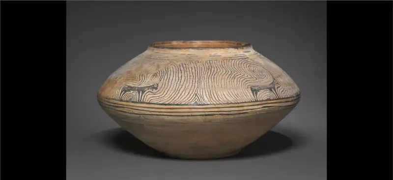
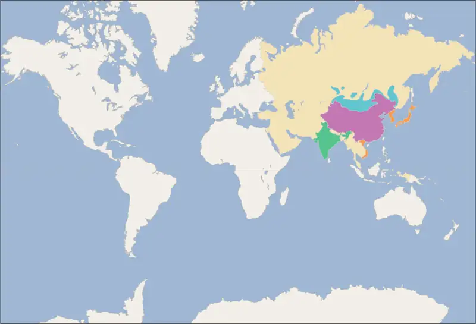
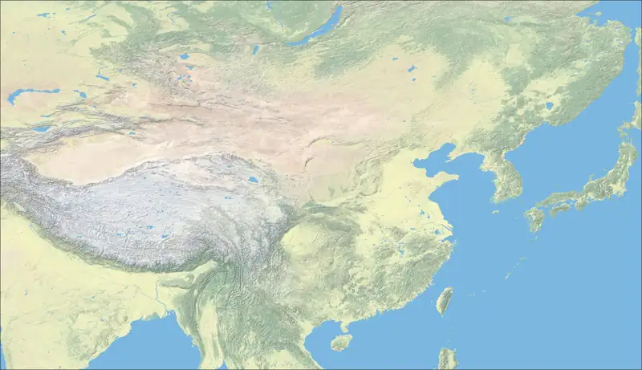
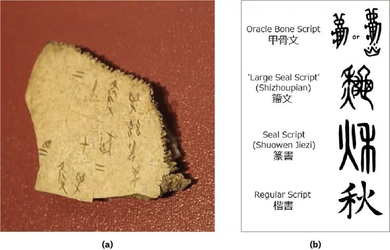
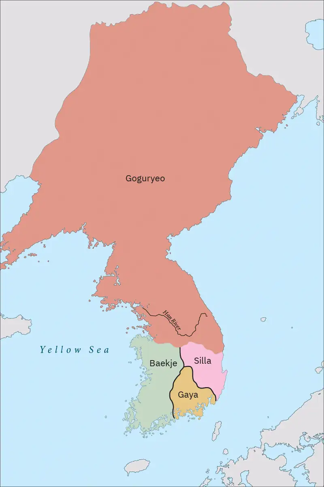
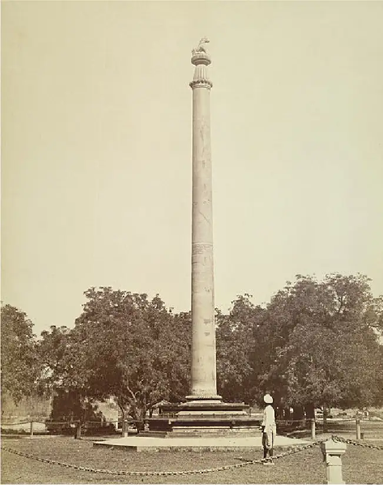

Chapter 5: Asia in Ancient Times¶
Introduction¶

Ancient Asia was dominated by two civilizational poles, one centered in today’s India and the other to the east, across the Asian landmass in China. Within both these zones developed impressive cities, kingdoms, and even empires whose commercial might, religion, and technology shaped the lives of Asians for thousands of years (Figure 5.1). Other Asians—traveling peoples of the steppes—acted as conduits of trade and exchange as they brought goods and ideas from one end of the continent to the other.
The same was true far to the east and the south. There, groups that became the Koreans and Japanese, as well as others who arrived in Southeast Asia via migration and trade, also carved out civilizations, smaller societies that influenced their larger neighbors in China and India. At this time, Asia was a region woven together by networks of traveling monks, nomadic peoples, oceanic and overland trade, and shared writing systems.
![A timeline of events in this chapter is shown. 100,000 BCE: Peking Man lives in China. 14,500 BCE: Jōmon hunters arrive in Japan; an image of an artifact of a head and torso with large eyes and short arms is shown on a stand. 1800 BCE: Aryans arrive in India. 1400 BCE: Oracle bones serve as first Chinese writing; an image of a stone is shown on a red background. 563 BCE: Buddha is born in India. 268-232 BCE: Ashoka rules India; an image of a stone carving of a figure being pulled by horses in a chariot surrounded by people is shown. 247-221 BCE: Qin Shi Huang becomes first emperor of unified China; an image of a man with a moustache and beard with a colorful hat and shirt is shown. 40-43 CE: Trung Trac and Trung Nhi fight Chinese domination of Vietnam; an image of a drawing of people on horses waging a battle with people on the ground is shown. 300 CE: Buddhism arrives in Southeast Asia. 595-647 CE: Queen Seondeok rules Silla in Korea; an ornate crown is shown. 604 CE: Prince Shotoku writes the Seventeen Article Constitution in Japan.](img/osx-worldhist-a05-00-timeline.webp)

5.1 Ancient China¶
Learning Objectives
By the end of this section, you will be able to:
- Discuss the early dynasties of ancient China
- Analyze the impact of the Warring States Period on ancient Chinese politics and culture
- Explain the connections between ancient Chinese philosophy and its political and social context
Ancient China was not the first area in Asia to practice agriculture and develop cities. But it was home to some of the world’s earliest political dynasties, and it produced written scripts, influential schools of thought and religion, and innovations in architecture and metallurgy, such as the manufacture of bronze and iron agricultural implements, weapons, chariots, and jewelry. A climate of constant regional warfare between small Chinese states imparted to kings and philosophers alike a sense of urgency to build institutions and systems that would bring stability to their realms. Against this background, China’s first empire, the Qin, presided over the creation of some of the ancient world’s greatest historical treasures, including the Terracotta Army and an early form of the Great Wall.
Prehistoric China¶
Recent studies of Paleolithic and Neolithic China suggest it was home to several distinct cultural complexes that developed independently of one another and exhibited notable regional variations in agriculture, social organization, language, and religion.
Human beings set foot on the Chinese subcontinent more than a million years ago. Evidence indicates the presence there of an archaic member of the human lineage known as Homo erectus, a term meaning “upright man.” One example is the well-known Peking Man, a subspecies of Homo erectus identified by fossil remains found in northern China in 1929. The species Homo sapiens (meaning “wise man” and including all modern humans) appeared later, around 100,000 years ago. These communities of hunter-gatherers followed the mammoth, elk, and moose on which they subsisted into northern China. Later they learned to fish along China’s many rivers and long coastlines and supplemented their food stores by foraging from a rich variety of plants, including many grasses, beans, yams, and roots.
Archaeological evidence from this stage of China’s prehistory, the Paleolithic period from roughly 100,000 to 10,000 BCE, confirms that these groups developed symbolic language, which enabled them to evolve ideas about abstractions like kinship and an afterlife and thus produce the foundations for a shared culture and society. Their tools, such as those used for grinding plants, were simple and fashioned primarily of stone, but also of bone and wood. Early humans arrived in China from Africa and western Asia in waves separated by hundreds of years, but they were far from uniform. Thus, they eventually produced early societies that spoke a variety of languages, differed in their spiritual beliefs, and developed the capacity for agriculture independently of one another.
China’s diverse geography, climate, and terrain reinforced regional variations in these early cultures as well (Figure 5.4). The country today stretches for roughly a thousand miles from north to south and east to west, occupying a temperate zone dominated by two major river systems, the Yellow and the Yangtze. Mountains, deserts, grasslands, high plateaus, jungles, and a variety of climates exist, such as the frozen environs surrounding the city of Harbin in the north and the subtropical climate around Hong Kong in the south. Most of the early cultures and later dynasties that produced Chinese civilization lay in a much smaller area, within a series of provinces along the Yellow and Yangtze Rivers, ringed by the outer areas of Manchuria, Mongolia, Xinjiang, and Tibet. Today these provinces make up the most densely populated areas of the People’s Republic of China, inhabited almost entirely by the majority ethnic group in China, Han Chinese. The outlying areas have been the traditional homelands of a great many religious and ethnic minorities, such as Mongolians, Tibetans, Uyghurs, and Manchu, who did not become incorporated into the first dynasties of ancient China. Early inhabitants of China found that each region offered advantages and challenges to meeting the necessities of daily life: food, shelter, and security.

More than twenty sites that produced unique Neolithic cultures have been found in China. The earliest such culture was the Nanzhuangtou (8500 to 7700 BCE) in Hebei, a province in the northeast, and the last known was the Yueshi culture (1900 to 1500 BCE) found in Shandong, an eastern coastal province. All were capable of farming, domesticating animals, and manufacturing textiles and ceramics.
China’s Neolithic cultures are notable for their independent growth and regional diversity, and for the differences between those in the north and those in the south. For example, in the southeastern part of the country, near Shanghai, a site dated to around 8000 BCE was home to people who cultivated rice, used boats, constructed standing homes, and made pottery with geometric designs. Evidence suggests their language was more closely related to those of the peoples living in Southeast Asia today, so calling them “Chinese” is open to debate. To the north, the colder climate forced early communities in today’s Hebei province to rely on another grain, millet, for their primary foodstuff. These farmers used stone tools such as sickles and made simple jars to store their grain. Wooden spears and hoes were more common in the south than stone tools, and while both north and south domesticated dogs and pigs, in the north grazing animals such as sheep were tamed, while in the south farmers harnessed the power of water buffalo.
There were distinctive Neolithic cultures in the east and west of China. From about 4100 to 2600 BCE, the Dawenkou culture arose near Shandong in the east, characterized by the manufacture of exquisite works of pottery and the use of turquoise, ivory, and jade. The burial practices of the Dawenkou became more elaborate over time, eventually leading to the use of wooden coffins and the creation of ledges of earth to surround the graves. Later eastern cultures lavished treasures on the deceased, burying them with necklaces and beads, showing an increasing sophistication in the decorative arts.
To the west lay the Yangshao culture, dating to 5000 BCE, whose people farmed millet and dug homes in the earth to protect themselves from a cool climate. In Yangshao, burying the dead was a simpler process, but artists decorated pottery with painted designs and intricate geometric patterns. To the east there are few examples of painted bowls, jars, or cups. Instead, eastern cultures devoted their creative efforts to the slow, painstaking process of shaping jade. The Hongshan culture in Liaoning province and the Liangzhu complex in Jiangsu fashioned beautiful jade talismans, ornaments, and treasures for spiritual ceremonies. The great distance between these two cultures—with Hongshan far in the northeast near today’s border with North Korea and the Liangzhu located around the Yangtze River delta in the southeast—shows the breadth of jade’s influence along China’s eastern seaboard. In the west, jade remained a much rarer object.
Later networks of exchange connected these regional cultures, which increasingly borrowed from each other, accelerating change, innovation, and collision. From roughly 3000 to 2000 BCE, China’s Neolithic cultures created and shared new implements for cooking and artistic styles such as geometric patterns on ceramics. With contact, however, came growing conflict as well, suggested in the archaeological record by the emergence of metalworking and cities defended by walls of rammed earth. The need to coordinate defense and construct such ramparts likely required a political evolution within these cultures, giving rise to an elite military class led by chiefs. Thereafter, military elites were shrouded in spiritual rituals revolving around human sacrifice, possibly of captives of war, who were entombed beneath buildings in sites found in northern China. Increasing exchange between Neolithic cultures and the prominence of war may also have led to greater social differentiation. Burial sites for elites show evidence of increasingly elaborate ceremonies to please the gods or ancestors and to honor the deceased and denote their status.
Women were often buried with the same quantity of items and laid in the same position as their male counterparts. Archaeological remains such as graves, figurines, tools, and other materials suggest that many Neolithic Chinese communities were matrilineal societies, in which lines of kinship were traced through the mother’s family. While weaving textiles became an important occupation for many women, the division of labor was far less rigid in this period. Carvings depicting goddesses, symbols of fertility, and women’s genitalia are prevalent in many of the cultures and seem to suggest women were on a par with men in the Neolithic era, especially when compared with later periods in Chinese history.
Early Dynastic China¶
The Yellow River had an enormous impact on the development of Chinese civilization. It stretches for more than 3,395 miles, beginning in the mountains of western China and emptying into the Bohai Sea from Shandong province. (Only the Yangtze River to the south is longer.) Critical to the development of farming and human settlement along the Yellow River was the soil, which is loess—a sediment that is highly fertile, but easily moved by winds roaming the plain and driven along as silt by the power of the river. This portability of the soil and the human-built dikes along the river have caused it to constantly evolve and change over the centuries, leaving the surrounding areas prone to regular flooding and subjecting farmers to recurring cycles of bountiful harvests and natural disasters. Rainfall around the Yellow River is limited to around twenty inches annually, meaning that the river’s floods have usually been paired with periodic droughts.
Near the Yellow River, the site of Erlitou in Henan province reveals a culture defined by the building of palaces, the creation of bronze vessels for rituals, and the practice of forms of ancestor worship. Sites such as these have led to debate about whether they prove the existence of the Xia dynasty, a fabled kingdom said to have been founded by one of China’s mythological heroes, the Great Yu. No site has yet been found with documents written by the Xia. Instead, all references to it come from records written many centuries after the possible mythical kingdom ceased to exist.
The first Chinese dynasty for which we have solid evidence is the Shang. It created a complex, socially stratified Bronze Age civilization whose signature achievement was the creation of a written script. The Shang were long thought to be a mythological dynasty like the Xia until scholars in the late nineteenth century discovered old turtle shells inscribed with Chinese characters in a medicine shop. Eventually, these shells and other “oracle bones,” once used in the art of divination, were found to be written records from China’s first dynasty (Figure 5.5).

Shang kings exerted their authority through rituals of ancestor worship drawn from the Erlitou culture and adapted to the art of bone divination. First carving written characters onto shells and animal bones and then applying heat to crack and shatter them, they posed questions to spirits and divined from the bones the spirits’ predictions regarding impending harvests, military campaigns, or the arrival of an heir. From there, the Shang developed a logographic script whose characters visually represented words and ideas, combining symbols to make new concepts and sounds as needed. These characters served in a number of tasks such as keeping records, making calendars and organizing time, and preserving knowledge and communicating it from generation to generation.
The earliest forms of Chinese writing were likely forged on fragile materials such as bamboo or even silk and have not survived. But the Shang’s passing on to future dynasties a logographic script, rather than a phonographic alphabet, meant that for centuries literacy was the preserve of elites. Reading required memorizing hundreds and eventually thousands of symbols and their meanings, rather than learning the sounds of a far fewer number of letters as is the case with an alphabet. Chinese ideas, values, and spiritual beliefs stored in this logographic script long outlived the Shang, becoming a key element of continuity from one dynasty to the next.
Through their invention of writing, the Shang were also able to command enormous resources for two centuries. They developed the organizational capacity to mine metal ores and transport them to foundries to make bronze cups, goblets, and cauldrons that grew to weigh hundreds of pounds. Shang artisans began weaving silk into cloth, and the city walls around an early capital in Zhengzhou were erected by ten thousand workers moving earth into bulwarks that stood thirty feet high and sixty feet wide.
But the Shang became China’s first dynasty largely because of their military prowess, expanding their power through conquest, unlike the earlier and more trade-oriented cultures. Through warfare and the construction of a network of walled towns, the Shang built one of the world’s first large territorial states controlled by a noble warrior class. This area included territory in Henan, Anhui, Shandong, Hebei, and Shanxi provinces. The Shang used bronze spears, bows, and later horse-drawn chariots to make raids against neighboring cultures, distributing the prizes to vassals and making enemies into allies for a share of the plunder. The prizes included captives of war, enslaved by the Shang warrior elite or sacrificed. An aristocratic and militaristic culture, the Shang also organized royal hunts for game such as deer, bear, and even tigers and elephants to hone their skills.
Link to Learning
Visit this website and read a detailed summary of the importance to ancient Chinese cultures of ritual killing to learn more about and see visual examples of the Shang’s ritualistic vessels, art of divination, and burial customs.
The oracle bones suggest that religion and ritual were the backbone of Shang society. The kings were not just military leaders but high priests who worshipped their ancestors and the supreme deity known as Di. Shang queens and princesses were also active in politics and warfare, with a few notable women such as the general Fu Hao leading large armies onto the battlefield. Aristocratic women also regularly served as priests in the royal ancestral cult. Like many other ancient societies, the Shang dynasty exhibited a theocratic dimension, with the kings claiming the exclusive right to act as intermediaries between their subjects and the spirit world.
To stage this royal role, the Shang built palaces, temples, and altars for worship in their capital cities, served by artisans making a host of goods. They developed enormous tombs tunneled beneath the earth for royals and nobility, signifying their capacity to organize labor and resources on a vast scale. Fu Hao’s tomb, for example, was small by comparison to many others for Shang royals, but it was dug twenty-five feet deep into the earth and was large enough to hold sixteen human sacrifices and hundreds of bronze weapons, mirrors, bells, and other items fashioned from bone, jade, ivory, and stone. A comparison of early Shang tombs in Zhengzhou with those of a later period discovered in Anyang suggests that human sacrifices became ever more spiritually significant, and also more extreme. Later kings were found buried not with a few victims but with hundreds of servants and prisoners of war, as well as animals such as dogs and horses. By spilling human blood, Shang royalty hoped to appease Di and their ancestors to ward off problems such as famine. But the scale of these rituals ballooned, with one record indicating that King Wu Ding went so far as to sacrifice more than nine thousand victims in one ritual bloodletting.
Under the sway of the Shang, the disparate Neolithic cultures of northern China grew more uniform, while even groups beyond the Shang’s control in the Yangtze River valley and the west were influenced by their artistic styles and motifs. Yet over the course of their reign, the Shang’s reliance on constant warfare and a religion centered on human sacrifices bred discontent and may have fueled the perception of their kings as corrupt and sadistic. It might even have precipitated revolt against the Shang rulers and the culture’s eventual demise.
The Zhou Dynasty¶
The Zhou dynasty, which supplanted the Shang dynasty in 1045 BCE, borrowed extensively from its predecessors. But the Zhou people were originally independent of the Shang, with their homeland lying in today’s Shaanxi province in north-central China, in a large fertile basin surrounded by mountains just beyond the core Shang territory that lay to the east. Once settled there, Zhou nobility became vassals of the Shang kings, equipped to defend them and campaign against their hated rivals the Qiang, a proto-Tibetan tribe.
The Zhou combined the practices of farming learned from the Shang with livestock raising learned from nomadic groups living outside the Chinese core. From the Shang, the Zhou also acquired the arts of bronze-making and divination before later developing their own ritual vessels and spiritual practices. Armed by the Shang with chariots, bows, and bronze armor, the Zhou eventually overthrew the Shang kings and founded a new dynastic ruling house. Inheriting the Shang logographic script, the Zhou dynasty became the first to transmit texts such as the Book of Documents, records of dozens of speeches and announcements attributed to historical leaders, from the ancient world directly to future generations.
But for all that the Zhou inherited from the Shang, their dynasty also introduced influential changes to ancient China. Likely in order to distance themselves from the Shang, the Zhou allowed the scale of human sacrifices in burials to decline and phased out the use of divination with oracle bones. Above the deity Di, they introduced the concept of a higher power referred to as heaven, and they situated themselves as mediators by performing rituals designed to show that the cosmos legitimated their right to rule (Table 5.1).
Table 5.1 China’s Dynasties This table marks the duration of China’s dynasties, from the start of the Shang dynasty to the fall of the last, the Qing, in 1912. The physical borders of Chinese civilization fluctuated from one dynasty to the next. (http://afe.easia.columbia.edu/timelines/china_timeline.htm#timeline-keyevents)
| Chinese Dynasty | Approximate Duration |
|---|---|
| Shang dynasty | 1600–1050 BCE |
| Zhou (pronounced “Jeo”) dynasty • Western Zhou dynasty (c. 1046–771 BCE) • Eastern Zhou dynasty (c. 771–256 BCE) |
1046–256 BCE |
| Qin (pronounced “chin”) dynasty | 221–206 BCE |
| Han dynasty • Western/Former Han dynasty (206–9 CE) • Eastern/Later Han dynasty (25–220 CE) |
206 BCE–220 CE |
| Six Dynasties Period • Three Kingdoms dynasty (220–265 CE) • Jin dynasty (265–420 CE) • Period of the Northern and Southern dynasties (386–589 CE) |
220–589 CE |
| Sui (pronounced “sway”) dynasty | 581–618 CE |
| Tang dynasty | 618–906 CE |
| Five Dynasties Period | 907–960 CE |
| Song dynasty • Northern Song dynasty (960–1127) • Southern Song dynasty (1127–1279) |
960–1279 |
| Yuan dynasty | 1279–1368 |
| Ming dynasty | 1368–1644 |
| Qing dynasty | 1644–1912 |
More than just spiritual changes, these policy shifts helped the Zhou spread a political ideology that fostered a shared cultural identity that was formative to Chinese civilization. According to the Zhou, the Shang rulers over time had grown despotic, ruining the lives of their subjects and squandering the bountiful resources of China. Around 1046 BCE, the Zhou, having grown tired of their abuses, rose up against the Shang and, led by King Wu, defeated them in battle.
The Zhou victory and Shang defeat were recorded in various Chinese classical texts as proof that the heavens had revoked the Shang’s right to rule and conferred it upon the new Zhou dynasty. This “Mandate of Heaven” shaped Chinese ideology and understanding of dynastic cycles for centuries to come (Figure 5.6). It justified the overthrow of bad governments and corrupt or inept rulers and reinforced a common conviction that in order to govern, a ruling house must demonstrate morality and order to retain heaven’s favor. The concept also pressured dynastic rulers to deserve the mandate by exhibiting moral leadership and proving their legitimacy through support for agriculture, the arts, and the welfare of the common people. Thereafter, natural disasters such as flood or famine and social upheaval in the form of rebellions or poverty were read as signs that a dynasty was in peril of having its mandate to rule rescinded.
![An image is shown. In the middle a light blue oval shows “Mandate of Heaven” in dark blue lettering. A teal colored box is located at the top of the oval with “Corrupt rule justifies the overthrow of rulers who have lost the mandate” written in white in the middle. A green box on the right side of the light blue oval states “Society’s common conviction that rule must be moral is reinforced” in white. A dark blue box shows at the bottom with “Rules demonstrate moral leadership in order to retain heaven’s favor” in white on the inside. At the left, a maroon colored box states “Dynastic rulers promote the welfare of commoners or lose their support and the mandate of heaven is rescinded” in white. Black curved arrows show from one box to another, forming a continuous path around the oval.](img/osx-worldhist-a05-01-manheaven.webp)
The Mandate of Heaven also ensured continuity between dynasties because it became an element of a core ideology passed from one ruling house to the next, even as non-Chinese groups such as Mongols and Jurchen later invoked it as conquerors. Thus, the mandate created a basis for increasing political unity of the Chinese under a supreme sovereign, while also promoting dissent and latent revolution against unpopular rulers. From this ideology sprang new terms for subjects, identified as denizens of Zhongguo (China), a name formed from the terms for central and state, or as Huaxia (Chinese) in the Zhou dynasty, to express their membership in a shared culture defined by farming, writing, and metalworking and inherited from mythical figures and common ancestors.
To consolidate their political control, the early Zhou rulers led military campaigns to extend their territory east over the Yellow River and relied on a complex system of decentralized rule. Leniency was shown to the Shang, with a son of the dynasty left to rule his own city and preside over rituals to honor his ancestors. Other Shang nobles were uprooted and moved to new cities to keep them under the watch of the Zhou, whose relatives and trusted advisors governed walled garrisons and cities on the frontier to guard against rising threats. In other areas, the Zhou cooperated with largely autonomous leaders, granting aristocratic titles in return for tribute and military service from local chiefs and nobility. To cement these ties, the Zhou brokered marriages between the royal line and the families of local lords, who within their own domains performed the same spiritual and administrative functions as the ruling family. Like the Zhou, local lords were served by ministers, scribes, court attendants, and warriors, and they enjoyed the fruits of the efforts of ordinary laborers and farmers who lived on their estates.
The Zhou proved more durable than the Shang but, especially in later centuries, their power was diffused among many smaller, competing kingdoms only nominally under their control. The Zhou’s decentralized feudal system, in which land and power was granted by the king to local leaders in return for special privileges, gradually weakened as those regional lords ignored the commands of kings, instead amassing armies and searching for alliances and technological advantages over their neighbors.
As a result, scholars typically divide the Zhou dynasty into several periods. The Western Zhou (c. 1046–771 BCE) refers to the first half of the dynasty’s rule, from its founding to the sack of its capital in Haojing by nomadic armies in 771 BCE. Afterwards the Zhou reestablished their capital in the east, in Luoyang, inaugurating the period called the Eastern Zhou (771–256 BCE). The Eastern Zhou dynasty itself is often divided into two halves—the Spring and Autumn (771–476 BCE) and the Warring States (475–256 BCE) periods. The first half of the Eastern Zhou dynasty derives its name from the Spring and Autumn Annals. That chronicle, from about the fifth century BCE, documents the gradual erosion of the Zhou kings’ power as outlying territories such as Chu, Qin, and Yan became increasingly autonomous. Not surprisingly, then, the Warring States era was characterized by open warfare between these regional powers to enlarge their territories, absorb neighboring kingdoms, and replace the Zhou as the new sovereigns of ancient China.
Bridging the two eras of the Spring and Autumn and the Warring States was a period defined by a flourishing of literature and philosophy known as the Hundred Schools of Thought (770–221 BCE). Inspired by political turmoil and rivalries between various Chinese states, those who wished to retain power were drawn to the study of the military arts, diplomacy, and political intrigue. Those who lamented the lack of order and waning loyalty to authority and tradition turned to the study of morality and ethics. In a political climate of competition and reform, new schools of thought informed a swelling class of capable administrators and military strategists contesting for the patronage of rulers. Philosophers such as Mozi and Sunzi, author of The Art of War, created their own rival traditions and contributed to courtly debates on morality, war, government, technology, and law.
In this marketplace of ideas, Chinese civilization as a whole rapidly grew more sophisticated. At the same time, rulers sought to expand their revenues, increase the size of their populations, implement new techniques for farming such as draining marshes, and create new forms of currency such as bolts of silk. This era also fostered dynamic new forms of art as the Zhou court became home to musicians skilled with chimes, drums, lutes, flutes, and bells. States such as Chu and Zheng became famous for their artists and styles of dance, while popular hymns were later translated into poems and recorded in the Book of Songs. These intellectual traditions and cultural forms, though varied, served as the foundational core for Chinese politics, education, and art in the ancient world.
Foremost among the new schools of thought was Confucianism, a philosophical system that shaped morality, governance, and social relations in China before spreading to Korea, Vietnam, and Japan in later centuries. Its founding philosopher, known as Kong Fuzi, or Confucius, was probably born about 551 BCE and lived in relative obscurity as a teacher in the small state of Lu. Later his descendants and disciples made his teachings on the family, society, and politics known in ancient China via The Analects, a collection of brief statements attributed to him and recorded long after his death. Later scholars influenced by Confucius, such as Mengzi, went on to win renown for their teachings, attracting throngs of new students while gaining influential positions as advisers in the service of rulers.
A central tenet of Confucianism is the importance of exemplifying virtuous leadership by living a moral life, studiously observing rituals, and being tirelessly devoted to the duties owed to the leader’s subjects. Confucian texts such as the Book of Documents promoted habits like literacy, critical thinking, the search for universal truth, humility, respect for ancestors and elders, and the valuing of merit over aristocratic privilege. Confucius also considered family relationships to be central to an orderly society. Specifically, he delineated five cordial relationships—between king and subjects, father and son, husband and wife, elder brother and younger siblings, and friends. Each relationship consisted of an authority figure who required obedience and honor from the other person or persons, except for friends who were to honor one another. In return, the person in authority was supposed to embody ren, an attitude of generosity and empathy for those beneath him. So long as everyone behaved as they should, good order would flourish.
Later Confucian teachers such as Xun Kuang (also known as Xunzi), witnessing the violence of the Warring States period, argued that humanity’s base impulses necessitated rigorous self-cultivation and discipline. Among devout Confucians, such ideas spawned a constant search for internal self-improvement and concern for the well-being of others and society as a whole. During this period, Zhou kings presided over rites to honor royal ancestors, but they also made greater use of written works to magnify their prestige and power. Yijing, or The Book of Changes, presented a new system of divination later included as a seminal text in the Confucian canon.
In Their Own Words: The Analects of Confucius
Over many decades following Confucius’s death, his students and followers collected his words of wisdom in The Analects. The Analects consists of twenty short books, each of which includes a series of short quotations on a particular theme. Confucius’s main concern was to teach people how to become junzi, compassionate and moral beings more concerned with doing what was right than with satisfying their own desires. The junzi understood their duties to others and fulfilled all the ancient ritual obligations. Confucius believed junzi could be created through education, and that society would be harmonious and peaceful if the government was guided by junzi. The following are some excerpts from Book 2.
“CHAP. I. The Master [Confucius] said, “He who exercises government by means of his virtue may be compared to the north polar star, which keeps its place and all the stars turn towards it.” CHAP. II. The Master said, “In the Book of Poetry are three hundred pieces, but the design of them all may be embraced in one sentence—Having no depraved thoughts.” CHAP. III. 1. The Master said, “If the people be led by laws, and uniformity sought to be given them by punishments, they will try to avoid the punishment, but have no sense of shame. 2. “If they be led by virtue, and uniformity sought to be given them by the rules of propriety, they will have the sense of shame, and moreover will become good.” CHAP. IV. 1. The Master said, “At fifteen, I had my mind bent on learning. 2. “At thirty, I stood firm. 3. “At forty, I had no doubts. 4. “At fifty, I knew the decrees of Heaven. 5. “At sixty, my ear was an obedient organ for the reception of truth. 6. “At seventy, I could follow what my heart desired, without transgressing what was right.” —Confucius, The Analects, translated by James Legge”
- Why would Confucius think it important to be able to feel shame?
- How would the values expressed here help make a person a better leader?
- What connection, if any, can you see between the teachings of Confucius and the Zhou concept of the Mandate of Heaven?
Link to Learning
You can read the full text of The Analects at the Project Gutenberg website.
A mystical indigenous religion that venerated nature, Daoism borrowed from various ideological systems, such as the dualism of yin-yang with its emphasis on the complementary poles of light and dark cosmological forces. Daoism’s thousands of texts, temples, and priests did not flower until the later Han dynasty, but during the Zhou era, this school emerged as a major influence thanks to teachers like Laozi and Zhuang Zhou (commonly known as Zhuangzi) and the circulation of the books attributed to them, the Tao Te Ching and the Zhuangzi. From them, Daoists learned a litany of poems, sayings, parables, and folktales teaching that dao (or “the way”) was an underlying influence that shaped and infused all humans, the natural world, and the cosmos. Daoists encouraged dwelling on the beauty of the natural world, exploring mystic rituals, and contemplating the comparative insignificance of the individual against the vastness of time and space. Perhaps the most important political concept introduced by Daoists was the idea of wuwei (or “nonaction”), implying to those in power that the best form of governance was a minimalist approach that avoided interfering in the lives of their subjects.
Counter to the Daoist tradition and Confucianism ran the school of thought known as Legalism, the focal point of which was the accumulation of power. Legalists argued that governments drew power from a written legal code backed by an expansive system of rewards and punishments to ensure enforcement and order. A few of its exponents, like the thinker Han Feizi, studied Confucianism first, but came to see its proponents and teachings as too idealistic and naïve. Legalists downplayed the need for morality and asserted that the bedrock of a good government was a “rich country and a strong army.”
While Confucianism, Daoism, and Legalism remained distinct, they borrowed liberally from each other and incorporated values, themes, and terminology to round out their own philosophies. All were open, eclectic systems reacting to historical circumstances and conditions. Moreover, each of these schools of thought and even the more minor traditions formed a common frame of reference within which Chinese rulers, philosophers, scribes, and even hermits expressed their own views. Confucianism and Legalism encouraged the study of texts over mystic rites, or society and its history over the supernatural and the afterlife, while other thinkers continued to ponder the yin and yang and work out principles applicable to astronomy, medicine, and the calendar. The world of spirits, ancestor worship, and folktales was no less prevalent than before. Still, it was the emergence of these new systems and their contributions that make this era an “axial age,” a critical stage in the evolution of not just Chinese civilization but the world.
The Warring States Era and Qin Unification¶
Over the course of the long Eastern Zhou era (771–256 BCE), the means and methods of warfare changed, with dramatic consequences for ancient China. Initially war was regulated by chivalrous codes of conduct, complete with rituals of divination conducted before and after battle. Battles were fought according to a set of established rules by armies of a few thousand soldiers fighting for small Chinese states. The seasons and the rhythms of agricultural life limited the scope of campaigns. Victorious armies followed the precedent set by the early Zhou conquerors, sparing aristocratic leaders in order to maintain lines of kinship and preserve an heir who would perform rites of ancestor worship.
With the advent of the Warring States era (475–256 BCE), these rules were cast aside, and values such as honor and mercy went out of fashion. New military technologies provided the catalyst for these changes. The invention of the crossbow made the advantages once owned by cavalry and chariots nearly obsolete. The result was ballooning conscript armies of hundreds of thousands, making military service nearly universal for men. Protected by leather armor and iron helmets, soldiers skilled in the art of mounted archery trickled into Chinese states from the steppes. Discipline, drilling, logistics, organization, and strategy became paramount to success. Treatises on deceptive military maneuvers and the art of siege craft proliferated among the various states of the Zhou.
Not all the changes wrought by war in the late Zhou period were unwelcome. For example, common farmers gained the right to include their family names on registration rolls and pressure sovereigns for improvements to their lands such as new irrigation channels. Iron technology was developed for weapons, but was also used for new agricultural tools. Together, increasing agricultural productivity and advancements in iron technology were part of a late Zhou surge in economic growth. Mobilization for war stimulated a cross-regional trade in furs, copper, salt, and horses. And with that long-distance trade came increased coinage. The destruction of states through war also created social volatility, reducing the status of formerly great aristocratic families while giving rise to new forms of gentry and a more powerful merchant class. The only way back up the social ladder was through merit, and many lower-level aristocrats proved themselves as eager bureaucrats in the service of new sovereigns.
One of the many warring states in this period, the state of Qin, capitalized on these economic and social changes by adopting Legalist reforms to justify an agenda of power and expansionism. The arrival of Lord Shang, a migrant born in a rival territory in approximately 390 BCE, who soon took the position of prime minister, was the turning point, when Legalism came to dominate the thinking of Qin’s elite. Before this, the Qin state had been a marginal area within the lands of the Zhou, a frontier state on the western border charged with defending the borderlands and raising horses. The Qin state leveraged this location by trading with peoples from central Asia. At the same time, their vulnerability on the periphery kept them in a state of constant alert and readiness for war, creating a more militaristic culture and an experienced army that proved invaluable when set against their Chinese neighbors in the east.
To offset their initial disadvantages, the Qin leaders wisely embraced immigrant talent such as Lord Shang and solicited help from advisors, militarists, and diplomats from rival domains. They adopted new techniques of governance, appointing officials and delegates to centralize rule rather than relying on hereditary nobles. Theirs became a society with new opportunities for social advancement based on talent and merit. Under Shang’s advisement, the Qin scorned tradition and introduced new legal codes, unified weights and measures, and applied a system of incentives for able administrators that helped create an army and bureaucracy based more on merit than on birth. Over time, these changes produced an obedient populace, full coffers, and higher agricultural productivity.
The Qin state’s rising strength soon overwhelmed its rivals, propelling to victory its king Ying Zheng, who anointed himself China’s first emperor and was known as Qin Shi Huang, or Shihuangdi, literally “first emperor” (Figure 5.7). The Qin war machine defeated the states of Han, Wei, Zhao, Chu, Yan, and Qi in less than a decade. Under Shihuangdi’s rule, the tenets of Legalism fostered unity as the emperor standardized the writing system, coins, and the law throughout northern China. Defeated aristocratic families were forced to uproot themselves and move to the new capital near Xi’an. To consolidate political control and reverse the fragmentation of the Zhou era, officials appointed by the emperor were dispatched to govern on his behalf, which cast aside the older feudal system of governance. Officials who performed poorly were removed and severely punished. Those who did well wrote regular detailed reports closely read by the emperor himself.
![An image of a painting is shown on a pale yellow background. A large man is shown with pale skin, large, round, brown eyes, thick angled eyebrows and beard and moustache. He has a large flat nose, red lips, and a round ball of skin protrudes between his eyebrows. He wears a colorful hat in black, blue, brown, and white with a round fuzzy ball above his head at the right, attached by a zig-zag line to the hat. His shirt is yellow with a blue and white collar, and red, green, white, and blue flowery designs show all over.](img/osx-worldhist-a05-01-huangdi.webp)
Qin militarism also turned outward, enlarging the bounds of Chinese territory as far as the Ordos Desert in the northwest. In the south, Shihuangdi’s armies ranged into modern-day Vietnam, laying a Chinese claim to the people and territory in this area for the first time in history. These expansions and the need for defense generated new infrastructure, such as fortified towns and thousands of miles of new roads to transport the Qin’s armies to the borders. Northern nomadic and tribal civilizations known to Chinese as the Hu (or Donghu) and Yuezhi were seen as formidable threats. To guard against these “barbarians,” hundreds of thousands of laborers, convicts, and farmers were sent to connect a series of defensive structures of rammed earth built earlier by states in northern China. Once completed, the Qin’s Great Wall illustrated how fortifying the north and guarding against the steppes became the focal point of statecraft in ancient China. Successive empires in China followed a similar wall-building pattern. The walls commonly referred to as the Great Wall of China today are in fact Ming dynasty walls built between the fourteenth and seventeenth centuries CE.
Shihuangdi was also ruthless in defending himself from criticism at home. Informed by his chancellor in 213 BCE that literate Chinese were using commentary on classical texts and literary works to critique his rule, the emperor ordered the destruction of thousands of texts, hoping to leave in print only technical treatises on topics such as agriculture or medicine. An oft-cited story of Shihuangdi’s brutality credits him with calling for the execution of hundreds of Confucian and Daoist intellectuals by burying them alive. Recent scholars have scrutinized these tales, questioning how much about his reign was distorted and exaggerated by the scholars of his successors, the Han dynasty, to strengthen their own legitimacy. In studying the ancient past, we must likewise always question the veracity of historical sources and not just reproduce a history “written by the winners.”
Another monumental feat of Shihuangdi’s reign was the creation of the Terracotta Army, thousands of life-sized clay soldiers fully armed with bronze weaponry and horses. From the time he was a young boy, the emperor had survived a series of assassination attempts, leaving him paranoid and yearning for immortality. Trusted servants were sent in search of paradise and magical elixirs, while hundreds of thousands of others were charged with the years-long process of constructing an enormous secret tomb to protect him in the afterlife. Almost immediately upon ascending the throne in 221 BCE, Shihuangdi began planning for this imperial tomb to be filled with clay replicas of his imperial palace, army, and servants. The massive underground pits, which cover an area of approximately thirty-eight square miles, were discovered with their innumerable contents near Xi’an in the 1970s (Figure 5.8). Labor for projects such as the Great Wall and the Terracotta Army came from commoners as a form of tax or as a requirement under the Qin’s law codes. Penalties for violating the criminal code were severe—forced labor, banishment, slavery, or death.
![(a) A photograph shows at least twelve stone walls from front to back, with some showing in opposite directions in the back, inside of a building. The tops of the walls are wavy and some of the corners are worn and uneven. In between the walls are clay statues of men with hats and clothing standing in rows, filling the spaces. Windows can be seen along the top of the walls and people are seen walking along the side walls of the building on walkways. (b) The image shows twelve gray and pale orange clay statues of soldiers standing in rows on a gray floor. Each statue shows an individual face with eyes, nose, and mouth and some thin moustaches. All wear some type of hat with a round object at their right. All wear shirts that close over to the right. Two statues in the back wear armor with a checkerboard design. Some have arms along their sides while one has his arms bent at the elbow in front of his body.](img/osx-worldhist-a05-01-terracotta.webp)
Link to Learning
Shihuangdi’s mausoleum has been designated a UNESCO World Heritage site. Use the tabs at the UNESCO website to view pictures and to access the videos of the Terracotta Army to learn more.
The Qin Empire quickly collapsed in the wake of the emperor’s death in 210 BCE. Conspiracy within the royal court by one of the emperor’s sons led to the deaths of his rightful heir, a loyal general, and a talented chancellor. Beyond the court, the Legalist philosophy and practices that had helped the Qin accrue strength now made them brittle. Imperial power exercised in the form of direct rule and harsh laws inspired revolts by generals and great families calling for a restoration of the aristocratic feudal society of the Zhou.
The armies of the Qin’s second emperor failed against Liu Bang, a commoner who rose to become Emperor Gaozu of the newly formed Han dynasty. The Han’s early emperors distanced themselves from Shihuangdi’s legacy by reducing taxes and burdens on the common people. But the Qin’s imperial blueprint—uniform laws, consistent weights and measurements, a centralized bureaucracy, and early focus on expansionism to ward off “barbarians” in the north—provided the scaffolding for the Han’s greatness.
5.2 The Steppes¶
Learning Objectives
By the end of this section, you will be able to:
- Discuss the role climate played in the ancient history of the steppes
- Describe the daily life of people who lived in the region of the steppes
- Analyze the relationship between the people of the steppes and nearby civilizations
The Eurasian Steppe is a vast stretch of grassland running from Eastern Europe over the top of central Asia and China into Mongolia. For much of human history, the area was home to traveling bands of nomadic pastoralists who grazed herds and collided with settled agricultural societies in Persia, Russia, and China. Geographers divide the Eurasian Steppe into two zones: One is in the west near Ukraine, Russia, and Kazakhstan, and the other is in the east, close to China and Mongolia (Figure 5.9). In both areas, the vastness of the land supported large herds of goat, cattle, and sheep. The prevalence of horses enabled powerful warriors of many cultures to rule from the saddle but also gave their people the freedom to roam, migrate, and resist absorption into a large unified state. While much of their history is still debated, these various tribes of the steppes provided the origins for a great number of Turkic, Iranian, Mongolic, Uralic, Tibeto-Burman, and multiethnic peoples today.
![An image of a map is shown. Dashed lines form a checkerboard pattern throughout the map starting in a circle at the top with small squares and ending with larger squares at the bottom. Water is shown in dark blue at the north, east, and south. Land fills the rest of the area. The land is shown in varying shades of dark green, green, teal, beige, and gray. A red line is drawn horizontally, dipping to the right, on the west side along an area highlighted the color teal and labelled “Western Steppe.” A red line is drawn horizontally on the east along an area highlighted the color teal and labelled “Eastern Steppe.”](img/osx-worldhist-a05-02-m-vaststep.webp)
The Nomadic Culture of the Steppes¶
The eastern half of the Eurasian Steppe, sometimes referred to as the Inner Asian Steppe, now contains vast grasslands, mountains, and deserts not suitable to agriculture and only sparsely populated. Its history has been shaped to a great extent by climate change. Rainfall across the grasslands in Mongolia once supported pasturing herds of sheep, camels, goats, and horses, but in periods of a cooling climate, the grasslands could shrink, forcing nomads to roam in search of new pastures. Or droughts could drive them to desperate measures: If nearby societies were unwilling to trade, the nomads were often left with no choice but to make raids on farms and cities as a means to survive. Scholars now theorize that shifts to a colder, drier climate around 1500 BCE forced many peoples living here to abandon agriculture for livestock herding. However, grazing animals required mobile human communities that could readily find new pastures and protect their herds from predators. Thus the need to care for livestock forced cultural adaptation as people mastered the art of horseback riding.
As livestock herders, many people of the Inner Asian Steppe consumed a great deal of meat and dairy and made products from animal flesh and furs that could be traded in agricultural villages. They spoke languages unrelated to Chinese, such as Turkic or Mongolic, but a few such as the Jie may have even spoken Indo-European tongues. Due to the constraints set on pastoralism by a changing climate, the peoples of the steppes were in constant contact with agrarian civilizations such as the Chinese, who often looked on the nomads and their herds as a pestilence and threat to their own livelihoods. Yet while Chinese and Koreans for centuries tried to erect physical and cultural barriers between their civilizations and the “foreign” groups on the steppes, the ethnic and ancestral lines between Asia’s nomads and their neighbors were porous.
Prizes taken by peoples of the steppes during raids, such as silk, lacquerware, grain, and war captives, were distributed by chieftains to their loyal supporters, who in turn conferred upon their leaders new titles such as chanyu, or khan, signifying a supreme leader with claims to spiritual and military supremacy. The khans’ command over thousands of horses in an age of cavalry warfare further enhanced their power. Tribal confederations of the steppes wielded control over the Silk Roads, a series of trade routes circulating luxury goods to and from China and parts of central Asia, India, and the Middle East. To a mobile society, manufactured and luxury goods had material, social, and political value of enormous worth. Silk, for example, was treasured by nomads because its lightness was ideal for clothing in hot summers and its softness was desirable for lining beds. Powerful generals and khans who amassed huge quantities of the fabric used it as an indicator of their power. The same was largely true of other luxury goods such as wine.
Link to the Past: China’s New Silk Road
For hundreds of years, the Silk Roads connected China to central Asia, India, and the Middle East and made prized Chinese goods such as silk available to the people of the steppes. The Silk Roads also created great wealth for China. Although trade over these routes ended in the fifteenth century, in 2013, China laid plans for creating a “New Silk Road,” better known as the Belt and Road Initiative (BRI).
The BRI is a development project that includes the building of highways, railroads, and energy pipelines across central Asia, Pakistan, India, and Southeast Asia as part of a Silk Roads economic belt. When completed, it is meant to integrate the nations of central Asia—Kazakhstan, Turkmenistan, Uzbekistan, Tajikistan, and Kirghizstan—into the global economy, just as the Silk Roads established during the Han dynasty connected the Turkic and Mongolic nomads of the steppes to the wealth of China and the Middle East. Together with a plan by China to develop ports on the Indian Ocean (a project known as the Twenty-First Century Maritime Silk Road), the BRI is intended to increase exports for Chinese companies, provide China with a secure connection to the oil of the Middle East, and assist in the economic development of the country’s western regions, which are poorer than other parts of the country.
Critics in the West as well as in India and Japan claim that the New Silk Road will also allow China to expand its political influence around the world. And not all the nations that China hopes will participate in the project have greeted it with open arms. Some have claimed it is too expensive. Chinese development assistance often comes in the form of loans, and some countries fear ending up in debt. This is especially likely if they are required to do business with Chinese companies that charge inflated prices for their goods and services. There is also concern about China’s record on human rights. In 2019, crowds in Kazakhstan protested Chinese plans to build factories in their country partly because of China’s much-criticized treatment of Uyghurs, an ethnic minority group in Xinjiang province.
- Why might leaders in China want to encourage an association between the modern economic initiatives and the older Silk Roads?
- Is it fair to suggest, as some have, that the Belt and Road Initiative and the Twenty-First Century Maritime Silk Road are imperialist in nature? Why or why not?
Most nomadic groups in Asia lived in small units of families or in a clan, a small group of several families that shared an encampment and herded or hunted together. Clans were united by loyalty to a chieftain selected for prowess as a mounted warrior. Compared with many other cultures in the ancient world, however, the societies of the steppes were more egalitarian. Role and status differences between men and women were more muted than in cities or farming settlements. Recent archaeological discoveries of female skeletons from the Xiongnu, Xianbei, and Turkic peoples of the steppes show evidence that women engaged in horseback riding and combat skills such as archery. They likely formed the historical basis for folktales about legendary female warriors such as Mulan that began circulating in Chinese society in the sixth century. Mobile lifestyles put a limit on the acquisition of wealth and its display in the form of architecture and clothing, which might explain why the development of written scripts was less common as well. Conversely, it was also true that most cultures of the Inner Asian Steppe readily absorbed technologies, goods, and ideas from neighboring civilizations.
Where the peoples of the steppes pioneered was in domesticating the horse, giving them a significant military advantage over their neighbors. Horseback riding and hunting provided the education in martial arts needed for war, and people began both activities at an early age. Hunting was a fixture of nomadic culture and the core of rituals that marked progress from child to adult, or from lowly member of society to one of the higher ranks. Touching both Europe and Asia, the steppes formed a bridge from which developments such as the chariot and cavalry warfare slowly spread to the rest of Asia. Chariots and mounted warriors in turn sparked the development of confederations that constituted a formidable military threat. Campaigns led by conquerors from the steppes—such as Modun, who came to power in 209 BCE—thus marked a turning point in the relationship between the Inner Asian Steppe, the rest of China, and the developing Silk Roads as arteries of exchange across the ancient world.
Link to Learning
This site provides an extensive history of the various nomadic tribes of the Eurasian Steppe. Consult the section about the Silk Roads to understand how these routes influenced the formation of tribal confederations and larger empires led by nomadic groups.
Tribes, Confederations, and Settled Neighbors¶
The earliest written records about many non-Chinese people living along the steppes come from Chinese sources, which referred to these people collectively as the Hu (or Donghu) and divided them into five large groups. These were the Xiongnu, the Di, the Qiang, the Xianbei, and the Jie. Later inhabitants of the steppes in the ancient world included the Khitan and many smaller groups.
Among the more powerful confederations noted by Chinese scribes were the Xiongnu, who controlled the lands near Mongolia from the third to the first century BCE. The Xiongnu became the dominant military confederation after forcing their rivals the Yuezhi to migrate west. In many periods, the relationship between the Xiongnu and Chinese dynasties such as the Han was complicated. Sometimes the Xiongnu and the Chinese were natural trading partners, exchanging horses for grain and silk. Access to Chinese civilization normally demanded that the Xiongnu submit tribute, accepting inferior status in return for trade rights and other rewards such as Chinese brides to establish stronger ties between the two cultures. At other times, the Xiongnu preferred to assert military and cultural dominance by raiding China and inciting war as well as constructing defenses such as the many northern fortification walls built by successive dynasties. At several points in their history, the Xiongnu were strong enough militarily to force the Chinese to adopt a policy of appeasement, exacting huge sums of silk, rice, and cash for peace. As a result, the tribute flowing between Xiongnu and Han Chinese often became a bribe meant to appease the nomadic tribes.
Simultaneously, tribal chieftains could often be employed as vassals of the Chinese, acting as a buffer to protect their border with the steppes or to sow division and conflict between various other bands of the Xiongnu. Chinese officials and soldiers also often found it convenient to defect to the Xiongnu, marrying into powerful families who sought their skills and expertise as administrators. For all these reasons, the border between the steppes and China was fluid and constantly changing, even as Han historians began to refer to groups such as the Xiongnu as “barbarians” and the antithesis of what it meant to be Chinese. Conversely, the nomads and tribes of the steppes often looked on Chinese farmers as lowly, weak, and servile peoples, in contrast to their own identity and values.
Critical to the struggle between the two were the Silk Roads. The balance of power, which initially favored the Xiongnu, shifted as two Han military expeditions went in search of allies in central Asia. These campaigns succeeded in subjugating the Xiongnu and gaining control over the eastern terminus of the Silk Roads. The Xiongnu were later weakened by years of civil war over their system of succession during the middle of the first century BCE. Less powerful groups in these wars tended to move toward the frontier of the Chinese empire and try to secure Chinese support against their rivals.
Thus the Southern Xiongnu, with their homeland threatened by natural disasters and resource scarcity, became vassals of the Han fighting against the Northern Xiongnu. Acceptance of tributary status required sending an aristocratic prince as hostage to live in the Han capital and be given a classical Chinese education, part of the continued cultural exchange between the Inner Asian Steppe and China. Channels between the two cultures widened as the later Han moved settlers west and tried to create military colonies along the frontiers for defense, staffed by non-Chinese auxiliary forces. Hundreds of thousands of Xiongnu lived inside the borders of China’s empire, often becoming more settled and assimilated in their lifestyles and cultural practices.
Following the collapse of the Han dynasty, various branches of the Xiongnu tribes founded dynastic states across northern China during a period known as the Six Dynasties (220–589 CE). With innovations such as the stirrup and new forms of armor covering the whole of the mounted warrior and his horse, heavy cavalry units made these nomadic groups the supreme fighting force in Asia for the next two centuries. During this time, much of northern China and the Inner Asian Steppe was dominated by large, multiethnic conquest states ruled by chiefs claiming mixed ancestry from both Chinese and nomadic groups. Dynasties such as the Later Zhao and the Han Zhao were founded by powerful Xiongnu chiefs such as Shi Le and Liu Yuan, respectively. However, these dynasties often invoked claims to legitimacy staked in their ancestral and cultural ties to the Han dynasty. The ethnic markers and identity of the Xiongnu as distinct from Chinese and other groups on the steppes slowly melted away in these centuries. At the same time, an economy rooted in ranching and herding spread from the Inner Asian Steppe to northern China in a period that saw long-distance trade and grain agriculture decline.
Meanwhile, another ethnic nomadic group known as the Xianbei also emerged as a powerful force in the world of East Asia in this period. Originally hailing from southern Manchuria, the Xianbei were once subordinate to larger nomadic groups on the steppes such as the Xiongnu. After the fall of the Han, the Xianbei grabbed territory inside China proper by conducting raids for horses, war captives, and herds of cattle and sheep. Their military might forced a massive reshuffling of populations in northern China, while many Chinese sought employment with the Xianbei as advisers and administrators.
Drawing on the wealth of Chinese farmers, a branch of the Xianbei known as the Tuoba clan founded the Northern Wei dynasty (386–534 CE). Adopting the imperial title of emperor, Xianbei rulers such as Xiaowen in the late fifth century tried to remake their society into a true Chinese dynasty along the blueprint of the Han (Figure 5.10). During Xiaowen’s reign, for example, elite Xianbei families arranged marriages between their daughters and wealthy, well-educated Chinese from the Southern dynasties. Such reforms proved dangerous. The opulence and culture of the courtly center of the Northern Wei alienated Xianbei soldiers of the garrisons along its frontier, who rebelled in 524 CE. The result was years of civil war and the sack of the capital in Luoyang. Still, the Xianbei proved a considerable force in the affairs of East Asia well into the later Sui and Tang dynasties.
![A map is shown, labelled “Asia, 500 CE Updated: 12-23-2007.” Water is highlighted blue and shown in the southeast of the map as well as along the south of the map. Blue lines on the land show as well as areas of water in the west. Green, yellow, and brown land fills most of the image. In the northwest, the Saami, Finnish Tribes, Ugrian Peoples, Sabirs, and Magyars are labelled. Smaller names include: Yakuts, Estoni, Venedae (Slavs), Onugurs, Bashkirs, Heruls, Antes, Kutrigur Huns, Gepid Kingdom, Huns, Sklaveni, Alans, Utrigur Huns, Abasgia, Lasica, Alans, Armenia and Albania. In the west a large area is labelled “Eastern Roman Empire.” To the southwest these areas are labelled on a land mass: Nobatia, Blemmyes, Makuria, Alodia, Axum, Somalis, Luo Peoples, and Bantu Tribes. An area with a question mark is also shown just south of the Somalis. Two other names are cut off the map. Just northeast is a peninsula of land with these areas labelled: Ghassanid Kingdom, Lakhmids, Kindah, Hejaz, Himyar (Yemen), and Azdi (Oman). In the northeast, a large area is labelled “Sassanid Persian Empire.” Heading east a large area is labelled “Hepthalite Khanate (possibly aka the Avers).” Straight north of that is an area labelled “Yuehban (Xiongnu Kingdom).” Southeast of the Hepthalite Khanate is an area labelled “Gupta Empire (collapsing)” with a small area above it with the number “29” in it. South of the Gupta Empire are areas labelled: Lata, Kalinga, Kadamba Empire, Pallavas, Gangas, Kalabhras, and Moriyas. East of Yuehban is a large area labelled “Khanate of the Juan-Juan (possibly aka the Avars), with a small area at the northwest labelled: Gaoche (Proto-Turks.) Heading straight south are the following areas labelled: Xiyu City-States, Tuyuhun, Zhang-Zhung?, Tibetan Tribes and Kingdoms, Kamarupa, Pyu City-States, Arakan, Thai Tribes, Chenla, Dvaravati, Langkasuka, Pan, Funan, Champa Kingdoms, Srivijaya, Kantoli, Tarumanagara Kingdom, and Malays. Heading east are the following areas labelled: Northern Wei dynasty, Southern Qi dynasty, Kyrghyz Tribes, Tungusic Tribes, Mukriz Tribes, Mobe Tribes, Goguryeo, Baekje, Silla, Tapanga, Emishi and Yamato (Japan). In the southeast corner of the map an island is labelled Papuans. In the northeast corner of the map are the Siberian Peoples and the Arctic Marine Mammal Hunters. A legend lists “Numbered Countries: 1. Oriel, 2. Ulaid, 3. Gwynedd, 4. Ceredigion, 5. Dyfed, 6. Giwysing, 7. Buelit, 8. Powys, 9. Gwent, 10. Dumnonia, 11. Durotrigia, 12. Wessex, 13. Sussex, 14. Atrebatia, (#15-20 are cut off on the map), 21. Gododdin, 22. Strathclyde, 23. Calwyddel, 24. Fib, 25. Fidach, 26. Crimean Goths, 27. Iberia (Roman), 28. Iberia (Persian), 29. Licchavis (Nepal), 30, Gaya Confederacy.”](img/osx-worldhist-a05-02-m-xiaowen.webp)
While the Xianbei and Xiongnu faded, after the fourth century another group known as the Khitan began a slow steady ascent toward power on the steppes and beyond. Organized for centuries as small clans of hunters, fishers, herders, and warriors in an area stretching from Mongolia to Siberia, the Khitan later founded the Liao dynasty (907–1125). Even more impressive were later empires that conquered the entirety of the Inner Asian Steppe and all of China, founded by the Mongols and Jurchen.
5.3 Korea, Japan, and Southeast Asia¶
Learning Objectives
By the end of this section, you will be able to:
- Discuss how geography and climate change influenced the early history of Korea, Japan, and Southeast Asia
- Describe the cultural exchanges between ancient Korea and Japan
- Compare daily life in ancient Korea, Japan, and Southeast Asia
Korea, Japan, and Southeast Asia were notable in the ancient world as homes to cultures uniquely engaged with the wider world. Via trade, religion, and diplomacy, Korea and Japan borrowed and adapted from Chinese civilization, but even more importantly from each other. Ties between Southeast Asia and India likewise proved formative in the eras in which many cultures evolved from small cities and agrarian villages into trade-post empires with monumental architecture. Conversely, geography, climate, and the early cultural forms produced by the first migrants meant that each area also produced its own indigenous systems. For example, Buddhist missionaries traveled from the Indian subcontinent across the Silk Roads and pilgrims trekked to temples to study and eventually bring home tools to convert their native cultures, but in each destination the faith was transformed into hundreds of new sects and interpretations of the path to enlightenment.
Ancient Korea¶
The earliest humans to reach the Korean peninsula did so around thirty thousand years ago. The land is very hilly, and mountains in the north form a barrier with Manchuria. Important rivers include the Daedong, the Han, and the Yalu. Winters are cold and snowy in the north, while summer months in the south feature blistering heat and torrential rains. Archaeologists have found evidence of bronze weapons dating back to 1300 BCE, but no clear proof that Korea at that time produced a Bronze Age civilization. The earliest written records of the first Koreans come from China, where the Book of Documents recounts the creation of a fief known as Joseon, located in northern Korea and awarded to a Chinese noble referred to as Gija. Later records in Chinese documents from 200 BCE to 313 CE provide descriptions of various small states in areas of Korea and Manchuria.
Seen from the vantage point of Chinese authors, our picture of ancient Korea begins to take shape during China’s Han dynasty, when the peninsula was home to a number of small tribes, cultures, and communities living near the borders of the Chinese empire. From these Chinese records it is also clear that the earliest Koreans were in constant contact and exchange with not just the Chinese but also Inner Asian Steppe peoples like the Xiongnu as well as settlers in Japan. Thus, ethnicity in ancient Korea was quite fluid and prone to change. Groups borrowed liberally from each other’s cultures, traded, and were absorbed and transformed by conquest.
The transformation of Korea into a unified culture and civilization is a story with many stops and starts. Historians often begin with the narrative of the Han dynasty historian Sima Qian, which tells of the dynasty’s efforts to suppress the Xiongnu by invading northern Korea and establishing four garrisons there, from the Liao River to near today’s Seoul. The presence of Chinese generals, troops, and settlers spurred exchange with societies on the Korean peninsula, which borrowed from Chinese culture the ideas of coins, seals, artwork, and building techniques to make roads and mounded tombs. Adopted by tribal chieftains and aristocratic warrior families, Chinese culture provided a wealth of material needed to engineer the first Korean states by controlling large areas of the northern half of the peninsula.
When unable to trade, Korean tribal societies mimicked the Xiongnu and raided the Chinese settlements, drawing strength and forging their own war bands. Among the early Korean polities noted in Chinese records in the north were Joseon, Goguryeo, and Buyeo, a frequent ally of the Han. With the collapse of the Han, each of these Korean societies lost a valuable partner and source of weapons, technology, and wealth. In the fourth and fifth centuries CE, all three struggled to defend themselves against rising powers in the north, such as the Xianbei.
In roughly the same time frame, in the central and southern parts of the Korean Peninsula, and therefore beyond the reach of Chinese administration, three groups known collectively as the Three Han established their territories. Chinese sources from the time refer to people in the southwest as the Mahan, those in the southeast as Jinhan, and between them a group known as the Byeonhan. These societies were ruled by aristocratic families that chose a chief and controlled the lives of lower-ranking commoners, servants, and enslaved people.
The Three Han were far less formidable military powers than their counterparts to the north, in part because they lacked horses and fought primarily on foot. On the other hand, they showed considerable cultural fluidity and knowledge of their neighbors. In Jinhan, many tattooed their bodies in decorative patterns like those found on the bodies of the Wa living in Japan, not surprising given that groups moved relatively freely between Japan and Korea in this age. Residents of Korea traveled to Japan, sometimes as traders and fishers and other times as migrants and permanent settlers. In Mahan, clothing and hairstyles mimicked a style used by the Xianbei on the Inner Asian Steppe, even as their lifestyles revolved around farming rather than a nomadic culture lived on horseback. Indeed, it appears that early Korean societies were quite selective in their borrowing.
Practices such as the levirate, in which a young male marries his elder brother’s widow, were used widely by Inner Asian Steppe peoples and adopted by a number of early Korean ruling families. But the decision whether to emulate the Chinese, Japanese, or other neighbors presented a range of options and cultural choices for chieftains and elite families to build on in this age.
The decline of Chinese power in the fourth century unleashed a wave of refugees that proved pivotal in speeding up the process of state-building in Korea, opening an age known as the Three Kingdoms (313–668 CE). The three kingdoms in questions were Goguryeo, Baekje, and Silla (Figure 5.11). Chinese immigrants resettling within the bounds of Korea provided a source of knowledge about political practices that strengthened the rule of elites, transforming them into kings. These kings commanded large armies, drawing legitimacy from their military prowess and creating mounded tombs that required vast resources and labor. From the struggles against groups such as the Khitan and Xianbei in the north emerged the kingdom of Goguryeo. In the late fourth century, under the leadership of King Gwanggaeto, this kingdom drove southward in a series of expansionist wars against its main rival, the Korean kingdom of Baekje and its allies from Japan, the Wa. In doing so, Goguryeo managed to make the third of the Three Kingdoms, Silla, a vassal by the early fifth century.

Beyond Goguryeo’s militarism, its expansion was marked by two other critical developments. The first was its skillful use of diplomacy and regional politics to manage alliances and threats, playing off groups within and around the Korean peninsula to secure its power. The second was the adoption of a written script from China, evidenced by 414 CE in a stone slab inscribed to note the accomplishments of King Gwanggaeto upon his death. Goguryeo’s elites also learned from the Chinese the art of adorning their large, mounded tombs with colorful murals depicting the lives of royals surrounded by dancers, servants, and enslaved people. Images of large battles, wrestling matches, and mythical creatures such as the phoenix in other mural scenes suggest the emergence of a rich courtly life.
During the Three Kingdoms era, the Chinese writing system spread throughout Korea, allowing those excluded from the ranks of aristocratic families a chance to seek appointment as scribes. The literacy necessary to study Confucian texts or Buddhist sutras, teachings of the Buddha, was a rare and very valuable skill. Knowledge of Chinese culture was another means to a life within the Korean courts, especially when writing poetry became a favorite pastime of Korean royalty and composing an eloquent verse was a critical sign of nobility and refinement. Many kingdoms sent royals, aristocrats, traders, scholars, and monks to China as apprentices to acquire skills and expertise they could bring home. These groups had an indelible impact on early Korean culture and society, particularly as Buddhism developed and grew into distinct sects and traditions. A few Korean Buddhist monks even traveled as far as India and central Asia, while others worked as teachers in the Three Kingdoms, inspiring new forms of painting, sculpture, and jewelry, and later the famed Buddhist monument, the first-century Seokguram Grotto (Figure 5.12).
![A photograph of the inside of a building with large carvings on the walls is shown. The floor is square tiled, gray in the back and black in the forefront. A large cross-legged statue is shown on a round, intricately carved pedestal in the far back recess of the room. He has closed almond shaped eyes, a hat on his head, and robes that hang off one of his shoulders. His right leg sits on top of his left leg and his arms rest on his legs. A halo is carved in the wall above the figures head and the walls are decorated with other carvings. A decoratively carved column stands in front of either side of the statue. The walls that come forward in the hallway are gray stone with a round arced ceiling. Two figures are carved on each wall of figures in long robes holding objects in their hands. The open room in the forefront of the photo is larger than the hallway and has two figures carved on each wall. The figures are clad in long robes, hats and hair up on their heads, and stand in various poses.](img/osx-worldhist-a05-03-seokguram.webp)
These changes to the Korean political, social, and spiritual landscape also powered Gogoryeo’s rival state Baekje. The kingdom of Baekje emerged from its home near the Liao River in Manchuria to conquer and absorb the Mahan territory in 369. To consolidate their control over the southwestern area of the peninsula, Baekje’s rulers created a Chinese-style bureaucracy with a chief minister and carried on a successful maritime trade with China and Japan. Demand for Chinese culture, weapons, and Buddhism gave Baekje influence and prestige in Japan. However, a military defeat by Goguryeo and Silla in 475 kept Baekje hemmed in below the Han River. Afterward, Baekje turned its energy to upsetting the balance of power on the Korean peninsula by entreating Silla to rise against Goguryeo, its protector and overlord.
Ultimately, however, it was Silla that emerged from these plots to unify a larger share of today’s Korea than any kingdom that preceded it. The smallest kingdom at the beginning of the era, located in the southeastern corner of the peninsula, Silla was ruled by powerful families that, like their neighbors, eventually copied models from China to wield power. Silla’s rulers created Chinese-style ministries and codes of law and supported the practice of Buddhism to enhance their prestige and legitimacy. Maritime trade later proved a channel for Silla to form an alliance with a reunified China under the Sui and then the Tang dynasties. Conflict between Goguryeo and the Sui began in the 590s and lasted for decades. Later, the Tang supplanted the Sui and renewed Chinese ambitions to dominate the Korean peninsula.
By the 640s, the skillful diplomacy of Queen Seondeok of Silla (Figure 5.13) had leveraged the hostility between Goguryeo and the Chinese into the means for a Silla alliance with the Tang. Her kingdom’s ships proved invaluable in ferrying Chinese armies onto the peninsula to lay conquest. Together, Silla and the Tang first subjugated Baekje and then eliminated Goguryeo in the north. Then, while the Tang set up bureaucracies to administer Korea, Seondeok’s successors in Silla conspired with the defeated forces of their rivals to evict the invaders. Together, the remnants of the Baekje and Goguryeo’s armies under the sway of Silla expelled Chinese forces in 676, ushering in a new era of unified rule over much of the peninsula that lasted from 668 to 892 CE. For a time, Silla severed its relations with the Tang, forgoing a critical resource that had powered its survival for centuries. But by the eighth century, new threats to both the Tang and Silla had emerged in the north. As a result, Silla once again sent tribute to the Chinese in return for protection and trade.
![A picture of a gold crown. The crown has etchings along the edges throughout. Two tall pieces stick up at each side of the bottom round band and in the middle of the crown a tall piece sticks upright with three elbow projections on each side with leaf-like decor at the ends as well as at the top. The back of the crown has two long stems sticking upright with four similar leaf-like endings. A piece goes from the left and bends and connects on the right side. Small knobs are seen throughout the crown with small “C” shaped white and pale blue and green objects in varying sizes attached with gold or white strings.](img/osx-worldhist-a05-03-crownsilla.webp)
Part of Queen Seondeok’s legacy was a period of unprecedented female rule, during which new art forms emerged that in later centuries became distinctive Korean traditions. In ancient Korea, women wielded power as royal princesses, and affluent women often served as advisors and regents. But Queen Seondeok’s reign paved the way for future queens of Silla, Jindeok, and Jinseong, to inherit the throne. Over time, Korean artisans learned from China how to make celadon ceramic, known for its lustrous green glaze, creating exquisite vases, jugs, bowls, and even pillows with Buddhist motifs such as cranes and clouds. In later centuries these works helped support a robust trade network running from China through Korea to Japan.
Beyond the Book: The Tombs of Goguryeo
Chinese rulers were not the only ones to build tombs that provide us with clues about what they valued in life. The rulers of the Korean kingdom of Goguryeo also constructed tombs decorated with murals depicting everyday scenes, presumably representing the lives they had lived and the lives they hoped to have after death. Shown here (Figure 5.14) are murals from the tomb of a Goguryeo man who was buried in the fourth century CE, not long after the end of China’s Qin dynasty. As you study the images, consider what they tell us about life among the Goguryeo elite at this time.
![Three images of faded paintings are shown on gray, brown, and black stone walls. (a) An image shows a man sitting cross-legged in long red robes with neon orange highlights. He wears a flat black cap, has small eyes, dark eyebrows, and a small thin moustache. He is looking down at his hands, which are raised in front of his chest. He holds a flat object in his left hand and an oval shaped object is his right hand. He is sitting in a square tent with a triangle shape on top with the curtains open in the front and hanging over his head. To the left a faded image of a figure is shown with a black hat, small eyes, thin moustache and wearing yellowing robes. To the right of the tent three half circles in orange with stripes are stacked on a pole. Faded images surround the tent in orange, black and white colors. (b) A very faded image of a woman sitting on a square, flat platform facing to the right is shown. She is dressed in thick red, orange, white, and black robes and her hands are hidden in the opposite sleeves of her robe at chest level. She shows a small red mouth, but most of her facial details are faded. Her hair is black and stacked on her head in a tall bun with a halo of black with tails surrounding it. She sits under a faded square tent with the sides draped at the top in white, black, and neon orange colors. Faded white wavy lines run down her image from the top of the tent to the floor. To the left, two figures are seen in long red robes with stone colored trim. Their black hair is piled on their heads in tall buns with halos surrounding the bun. Red details are seen in the hair. Their facial features are faded, but small, red lips are shown. A figure to the right is shown in faded long red and orange robes holding a black plate and faded saucer in her hands at chest level. Her red mouth and black eyebrows show and her black hair is piled on top of her head in a series of half-moon projections with an ornate headband in the middle. Faded images surround the tent in black colors and the bottom of the image is painted orange and red. (c) A very faded images shows on a rectangular stone, with a broken top left corner and worn and faded edges in black, brown, and white colors. The bottom third of the image is varying shades of brown stone with no images. The top two thirds of the image show three rows of figures and animals walking to the left. The top row shows six figures in long white robes riding brown horses. Next, seven figures in black boots walk holding long black thin objects over their shoulders. Four figures on horses clad in decorative blankets sit with large black hats and hold long black poles. The second row shows a large figure in an orange robe siting on a red reined horse facing to the right. A figure on a brown horse in a white robe is next, facing to the left. Behind the horse, three figures of varying sizes stand in robes of white and green. A similar image of this four group of people follows two more times and then a figure in green robes holding a long red stick with a long red, thin flag is shown walking. A large brown horse follows with a figure in brown walking next to it. A blurry image follows which shows a group in brown walking as well as a triangle shaped chariot of sorts. The last row shows very faded riders in long robes of white on brown horses. Following is a group with black boots, red shields and long black poles. Horses clad in blankets show next with riders in matching outfits. At the right a large mass of figures stands behind the three rows sitting on horses. Details are faded but brown horses are seen and figures clad in long dark robes.](img/osx-worldhist-a05-03-goguryeo.webp)
- What do these murals tell you about the lives of Goguryeo’s elite? What did they value and what were their concerns?
- Do you see any Chinese influences in these depictions? If so, where are they?
Ancient Japan¶
As in Korea, geography shaped much of Japan’s early development and history. Four main islands make up Japan. The northernmost is Hokkaido. Then comes Honshu, which is home to Tokyo and the largest present-day population. Continuing south, the next island is Shikoku, and finally Kyushu, which is closest to the Asian mainland. Japan today also includes the islands of Okinawa and thousands of others strewn across the Pacific. But much of the story of ancient Japan concerns only the main isles, the inland Sea of Japan, the country’s countless mountains, and a few fertile plains fed by monsoon rains that sustain agriculture.
Critical to the formation of the main islands and their geographical features is the belt known as the Ring of Fire (Figure 5.15), mapped by a horseshoe-shaped line drawn around the rim of the Pacific Ocean to mark a zone of frequent earthquake and volcanic activity that has generated countless tsunamis in Japan’s distant past and modern day.
![A map is shown. Water is shown in blue and land is highlighted beige. A line runs just below the middle of the map labelled “Equator.” Large land masses are shown at the northwest, northeast, and southeast. Smaller islands line the coast of the northwest land mass to the east, and a middle sized land mass is seen in the southwest with small islands north and east of it. A large mass of water shows in the middle. Water is also seen at the north in a thin area, and on the east and southwest portions of the map. A horseshoe shaped area is highlighted peach that begins at the southern tip of the landmass at the east. The peach highlight runs up north along the coast, then heads west and then back down along the islands in the west and around the middle sized land mass at the southwest, encompassing the islands that are to the east. This is labelled in large red letters “RING OF FIRE.” Thick blue lines are shown inside this peach area. In the southeast it is labelled “Peru-Chile trench” and runs along the middle of the land mass. Heading north a blue line is labelled “Middle America trench” and runs along the thin area connecting the two land masses. Across the top a blue line is drawn along small islands between the two land masses labelled “Aleutian trench.” In the west, seven blue lines are drawn with these labels, from north to south: Kurile trench, Japan trench, Izu Ogasawara trench, Ryukyu trench, Philippine trench, Marianas trench, Challenger Deep (a white dot is shown to its left), Bougainville trench, and Java (Sunda) trench. To the east of the middle sized land mass are two blue lines labelled “Tonga trench” and “Kermadec trench.” In the bottom southeast of the map a trench is labelled “South Sandwich trench” along some tiny islands and to the east of the Middle America trench is a blue line drawn along some islands labelled “Puerto Rico trench.” Five red triangles are shown on the map. Two are north of the Middle America trench and labelled “Mt. Garibaldi” and “Mt. St. Helens.” Three others are shown just southwest of the Philippine trench labelled “Mt. Pinatubo,” “Mt. Mayon,” and “Krakatoa.”](img/osx-worldhist-a05-03-m-ringfire.webp)
The story of prehistoric Japan is typically divided into two halves: the era of Jōmon hunters, ranging from 14,500 to 300 BCE, and that of the Yayoi agriculturalists who emerged after them to dominate the centuries from 300 BCE to 300 CE. These groups had no concept of themselves as “Japanese” in a sense recognizable to us today. But they left their imprint on the main isles via migration, settlement, and the development of practices for making the fertile plains, mountainous forests, and innumerable ocean bays and rivers their homes. Without written records, our knowledge of the Jōmon and Yaoyi is almost wholly based on the archaeological evidence and contemporary theories about the pathways humanity followed out of Africa and across the world. Early hominids likely made their way to the Japanese archipelago when it was still connected to the Asian continent, perhaps over 100,000 years ago. Hunting giant mammals such as elephants, wolves, and enormous deer, many of these early hunters moved to an area near today’s Sea of Japan. Much later, changing climates led ocean levels to slowly rise and cover the stretches of land that connected Japan to the Asian mainland.
Linguists theorize that ultimately three early waves of foragers and hunters made their way overland or across the Tsushima Strait that separates the four main isles from the Asian mainland. These groups were descended from Ural-Altaic, Chinese, and Austro-Asiatic peoples. The climate shift that severed Japan from the Asian continent around twelve thousand years ago transformed the newly formed isles and the game these people once hunted. Grasslands for bison disappeared, for example, and wolves became smaller.
But the early inhabitants adapted, inventing new technologies to enhance their chances for survival. In the caves of Kyushu, archaeologists have found evidence of one of the world’s earliest technological breakthroughs, the development of pottery. Known for its elaborate handles and distinctive cord patterns around rims, this pottery allowed Japan’s inhabitants to become more sedentary and less dependent on finding wild game and foraging for edible plants. First used to store vegetables and boil water from the sea to make salt, the pottery called Jōmon was likely later used for rituals to promote unity and cooperation (Figure 5.16). The increasingly sophisticated culture of the people, also called Jōmon, was characterized by settlements with shared spaces for burials, food storage, and elaborate ceremonies. Among the important cultural symbols were earthenware figurines known as dogu.
![Two photographs of ancient pottery are shown on gray backgrounds. (a) A tall orange and black round container is shown with a large, open top with décor carved around the square and round edges that jut out. The long body of the container is imprinted with a textured surface. (b) An ancient artifact is shown displayed on an off white pole attached to a square, flat stand. The object is pale orange and gray. A face shows with oversized round, closed eyes, only showing a slit. The nose is a small hole in between the eyes and the mouth is a small almond shape under the nose. The hat on top is round with a broken point at the top. The thick neck is encircled with four thick lines. The short torso shows swirls carved into it and the arms are short, thick at the shoulders and thin at the bottom, ending in broken stumps.](img/osx-worldhist-a05-03-jomondogu.webp)
Skeletal remains of the Jōmon people suggest that despite their diverse diet of fruits, nuts, and seafood such as clams and fish, they lived with the constant threat of starvation and malnutrition. Another shift in the region’s climate produced a deadly drop in temperatures that led to a decline in the populations of game such as deer and boar. To survive, many Jōmon moved to the coastal areas to supplement their food supply by fishing. Others likely began experimenting with early forms of agriculture; evidence suggests the cultivation of yams and lily-bulbs in the years from 3000 to 2400 BCE. Further evidence of early agriculture comes from traces of rice found in jars dated to the later years of the Jōmon era.
Agriculture and the Yayoi¶
The next phase of Japan’s prehistory is marked by the leap into agriculture and is known by the name of a separate people and culture, the Yayoi. Beginning in 300 BCE, a new wave of migrants descended from groups in northern Asia began arriving on the southern island of Kyushu. They brought with them knowledge about cultivating barley, buckwheat, and later rice, and gradually they overwhelmed and replaced the Jōmon. Later, the Yayoi built impressive storehouses for grain and domesticated horses and dogs. Other archaeological sites show that, as Yayoi culture spread, the people developed the capacity to engineer the landscape for farming by creating irrigation canals, wells, and pits. Agriculture brought stability and growth, and the Yayoi population is estimated to have ballooned to more than half a million people by the first centuries of the common era.
The Yayoi period marked a turning point in Japan’s prehistory. From this point forward, Korea, China, and Japan were in more consistent contact than in the centuries before. This was especially the case because in the Bronze Age, with copper in short supply on the islands of Japan, the Yayoi were forced to import much of the material. The Yayoi period also marked the beginning of a written record of Japan.
Han conquests and the construction of garrisons on the Korean peninsula began a period of trade in bronze mirrors, iron weapons, and agricultural practices transmitted via Korea to Japan. The Han dynasty (206 BCE–220 CE) and later the kingdom of Cao Wei (220–265 CE) also sent occasional envoys to Japan (which the Han called the Wa kingdom). These envoys left behind the first written records of the lives and cultures of the Yayoi. Their observations show a slow but gradual transformation of society and politics. Despite increasing food surpluses and material abundance, the Yayoi people at first remained largely communal, sharing wooden tools and public spaces. Over time, the appeal of certain areas and sites for agriculture led to competition and increasing warfare and, by extension, the emergence of states to provide for defense.
Chinese records also note the distinctive style of dual governance—in which power was shared between male and female rulers—that developed in early Japanese states at the end of the Yayoi era. Among the notable rulers was Queen Himiko, who ruled in the early third century and, in return for paying tribute to the Chinese emperor, was recognized as an ally and given a golden seal. Ruling alongside Himiko was her younger brother, who handled the administration of her realm. The Cao Wei’s records show that Himiko was at war with a neighboring king and staked the legitimacy of her rule on her spiritual powers, expressed in elaborate burials, the practice of divination, and other sacred rituals. Through such specialization, ancient Japanese women exercised political power and influence, possibly built upon the legacy of the Jōmon, whose dogu figurines depicted women as deities ensuring fertility and safety.
Chinese envoys noted that Japan was also home to an increasingly stratified society that included aristocratic families, merchants, skilled divers and fishers, farmers, and other commoners. With warfare constant, palaces looked more like garrisons, but granaries and markets were full and lively. And while these early Japanese lacked a written script, the Yayoi did develop a rich art form literally written on their bodies, as the practice of tattooing patterns to denote rank, status, and family was widespread in this era.
The Dawn of the Yamato Age¶
Records of Queen Himiko’s era also suggest a growing concentration of political power and control over territories held by a loose confederation of states and powerful families. This period, known as the Yamato era, was marked by the construction of tombs for deceased royals like Himiko, who were buried with an impressive array of treasures and human sacrifices to accompany them in the afterlife.
It may be that the onset of the Yamato era was produced by a changing climate and constant turmoil in Japan, as a result of which many of the island’s inhabitants despaired and abandoned deities who seemed negligent in their duty to protect them. Instead, new gods associated with an imported technology—mirrors from China and Korea—arose to take their place. Powerful rulers and a new military class forged from warfare associated themselves with these new gods, or more importantly, with the female god of the Sun, Amaterasu, who soon became the ancestral figurehead of the imperial household. Yamato kings further accrued power by brokering alliances, managing trade, giving symbolic gifts, and presiding over ceremonies designed to forge a common culture across Japan.
As co-rulers of a kingdom or heads of households, women continued to wield political clout by using expertise in sorcery via items such as mirrors and often expressing their triumphs in gold jewelry and earrings. Many spiritual practices were imported from earlier Chinese dynasties such as the Shang dynasty. For example, during the burial of Queen Himiko, Chinese envoys recorded that Japanese employed the art of divining the future with heated bones by reading their cracks to foretell the outcome of harvests and wars. Other burial practices such as water purification were more indigenous to Japan and left an imprint on later religions such as Shintoism. Later, new foreign religions such as Buddhism were used by women such as Empress Suiko, who ruled in the early seventh century CE and sought to preserve women’s role in politics through practices such as piety, rigorous study of sutras, and the construction of shrines and temples.
Regardless, it was the construction of large keyhole-style tombs and control over the burial rituals that brought the Yamato rulers power over the area stretching from western Honshu to northern Kyushu. Employing laborers and skilled artisans such as blacksmiths, the Yamato tomb makers showed their wealth and organizational capacity, skills they used later to create capital cities with large markets and highways to the countryside and the coastal ports. To centralize power, kings soon began issuing law codes, such as Prince Shotoku’s Seventeen Article Constitution in 604. The emphasis on law as the basis for rule, the creation of a bureaucracy to help rulers govern, and Confucian values embedded in the document show the Yamato’s reliance on Chinese culture as a source of ideas and inspiration. Borrowing from the Chinese model for imperial statecraft, the Yamato strengthened their rule with mythology and bejeweled regalia, elevating kings to godlike status and eventually transforming them into emperors. Later legal codes such as the Kiyomihara Codes in 689 organized monasteries, created a judiciary, and managed relations between the king’s advisors and vassals. These set the stage for the evolution of Japan’s culture and political system in the later Heian and Nara periods.
Link to Learning
Prince Shotoku’s “Seventeen Article Constitution” was an effort to reform the Japanese state along the lines of the Chinese imperial model. Read the translated law codes at Columbia University’s Asia for Educators site.
To the north, beyond the lands of the Yamato, was another group descended from the early Jōmon foragers who had lived on and resisted the sweep of Yayoi settled agriculture. Later, they continued to forage and hunt and practice their own spiritual beliefs, rejecting the Yamato cultural sphere and its borrowings from China, such as Buddhism, Confucianism, and the idea of large states governed by kings and emperors. While the later Japanese imperial courts in Nara and Heian deepened ties with China’s Tang dynasty, these northern people existed in another orbit defined by contact with smaller northern Asian cultures, such as the Satsumon people of Hokkaido. Relations with the descendants of the Yamato to the south soured over these centuries, as Nara and Heian came to call the northerners Emishi, or “barbarians.” The Emishi survived from the seventh to the eleventh century despite repeated attempts by emperors and militarists from the south to subjugate them. They resisted via war, moved to remote areas, and used other forms of evasion, but the culture of Japan’s south moved inexorably north, and the smaller remnants of the Emishi were subdued by the end of the ninth century.
Southeast Asia¶
The term “Southeast Asia” describes a large area in subtropical Asia that can also include thousands of islands in the Pacific. Today it often refers to Brunei, Burma, Thailand, Laos, Cambodia, Vietnam, Malaysia, Singapore, and Indonesia. For much of human history, travel across this area was far easier by boat along the shore and between islands than overland. Lands were more sparsely populated than in India, China, Japan, and Korea, and most communities were isolated from their closest neighbors by forests and mountains. Early on, however, they became able to engage with other peoples through the sea lanes.
In general, communities in Southeast Asia settled first along coastlines near rivers, lakes, and the oceans and seas. But archaeological sites in Thailand, Burma, and Laos prove that many chose to make upland regions their homes as well. As in India, early agriculture was driven by the rhythms of monsoon season. Farmers developed rainwater tanks to manage their supply of water and learned how to grow rice in paddies. A reliance on slash-and-burn agriculture meant that many Southeast Asians had to migrate after the soil had been exhausted, making the population fluid as people moved from one area to the next. The social structure, too, was less stratified than in India and China. Only with the later arrival of new religions such as Buddhism and Hinduism did priestly and kingly classes start to form and play a central role in religion and politics.
Despite its great territorial expanse and varying climates and topography, the region does have broad commonalities that make it useful to see Southeast Asia as one geographic and cultural zone (Figure 5.17). For example, its location between India and China led to the growth of royal courts that borrowed from foreign traditions to develop rituals and diplomatic relations, assert control over ordinary farmers and fishers, and create trading-post empires. The region’s geography and climate also made sailing a universally efficient craft. For centuries, merchants and adventurers traveling from the Indian landmass along the coastlines of Asia have exploited monsoon winds from June to November that easily push boats all the way to the Malaysian peninsula. Return voyages were made possible by a second set of monsoon winds blowing in the opposite direction from December to May. The holdover period between the two monsoon seasons proved ample time for merchants and missionaries to transplant customs, religion, and art from India to new environs in Southeast Asia. At the same time, the arrival of boats and merchants traveling from Vietnam and Malaysia to China and back as early as 300 BCE meant residents of Southeast Asia enjoyed a rich marketplace of ideas, goods, and cultures at a very early stage in world history.
![A map is shown with these countries labelled: Burma, Laos, Thailand, Vietnam and Cambodia in the northwest corner of the map. Philippines in the northeast, Malaysia in the southwest and Indonesia along the south. Water is highlighted varying shades of blue and land is highlighted green. Highlighted yellow areas indicate “Rice cultivation” and are located in Burma, Vietnam, Thailand, Cambodia, the Philippines, and in Indonesia. Orange highlighted areas indicated “General Agriculture” and are located in Burma, Thailand, Laos, Cambodia, Vietnam and Indonesia. A label in the bottom left of the map shows a “USDA” seal and the words “Foreign Agricultural Service Office of the Global Analysis IPA Division.” “Source: Agricultural land cover, Geocover LC 2000” is shown below the map in the right bottom.](img/osx-worldhist-a05-03-m-seasia.webp)
While the influx of foreign ideas was critical to the development of societies across Southeast Asia, each local community made selective adaptations and preserved its indigenous customs. For example, the importance of the individual family was a point of commonality for many societies in Southeast Asia, in contrast to the weight given extended families and clans in India and China. Most peasant communities in Southeast Asia also afforded women higher status than their counterparts in China were allowed under the stricter Confucian values system.
Archaeological remains of the region’s prehistory show that inhabitants of northeast Thailand used bronze and mastered agriculture as early as 3000 BCE. Evidence found at Non Nok Tha shows that they grew rice and cast bronze in factories using molds, later producing iron objects. The spread of rice cultivation produced densely populated centers along the region’s smaller fertile plains. Expanding populations were often forced into hilly regions, which they made suitable for farming by creating terraces. Migration chains and artifacts such as simple tools suggest that by the time the inhabitants of India began making contact with Southeast Asia, the islands and coastline settlements there were dominated by peoples related to Malays, who had made their way from southern China. Expert sailors working with finished stone tools and navigating by the stars, these peoples developed long, narrow boats that navigated Southeast Asia’s water with speed and grace. Moreover, they left behind cultures with maritime traditions that echo today with Malaysians, Indonesians, and the people of Singapore.
The archaeological record of Southeast Asia’s prehistory is less clear than that of many other areas of the world, however, and its study has been hampered by many circumstances, including the political volatility of countries such as Vietnam and Cambodia after 1945. As a result, historians often look to the region’s villages and families for insights into its remote past. For example, cultivating rice in terraced rice paddies requires skill and cooperation among many families, likely making this task the basis for village leadership and unity. Elders with experience in selecting breeds, transplanting young plants, and negotiating water resources likely used their authority to foster consensus around values and politics oriented toward giving deference to seniority. It is also possible that growing rice is particularly suited to cultures with animist religions, which venerate deities and spirits thought to inhabit nature. Rites and festivals to honor grains and timber and to appease forces that control wind and rain are still important to local cultures in Southeast Asia today, even as many people also participate in universal religions such as Buddhism.
Occupations offer another important point of continuity. Fishing, farming, and craftwork in fabrics are depicted in carvings found in caves, temples, and mountainsides and remain the primary labor activities of rural peoples today. For example, in Brunei many people still live much of their life on the water—at work as fishers and divers as well as at play when racing boats and swimming. Houses and many other buildings are still situated in the hills or on stilts to protect them from flooding, and many people share a diet of fish, simple grains, and coconut, just as their ancestors did.
In early Southeast Asia, trade and the arrival of outside religion were critical to the development of larger states and powerful kingdoms. Even in the interior, Buddhist artwork and texts flowed in steadily from 300 to 600 CE. The mouths of great rivers linked the interiors and the coasts, and capitals and small principalities that developed there taxed the trade on goods traveling to and from the wider world. During these centuries, Southeast Asians also traveled to India to trade and learn Sanskrit. When Indian elites and literate Buddhists arrived, they came to be known as purohita, advisers to Southeast Asia’s powerful chiefs and nobility. Other immigrants became teachers and founded temples across the region’s landscape, critical hubs that promoted travel, learning, and commerce.
As they did in India, Buddhism and Hinduism coexisted with local religions in much of Southeast Asia. In areas such as the kingdom of Srivijaya, which ruled over the island of Sumatra and southern Malaya Peninsula from the seventh to the twelfth centuries CE, Indian merchants and missionaries were welcomed, while the people retained their own religious traditions rooted in the worship of spirits that inhabited trees, rocks, water, and various physical features of the land. Proclaiming themselves “Lord of the Mountains,” Srivijaya’s rulers patronized Buddhism to foster trade relations across the Malaccan Straits and Indian Ocean.
Other communities, such as nearby Borobudur, which controlled central Java in Indonesia, were more firmly devoted to Buddhism. There, Buddhism inspired countless converts and the later Shailendra Kings (775–860 CE) to erect the world’s largest Buddhist monument, a structure more than one hundred feet above the ground and adorned with magnificent artwork (Figure 5.18). Buddhists from all over Southeast Asia made pilgrimages to Borobudur, leaving behind thousands of clay tablets and pots as offerings. Wreckage from a nearby ship dated to the ninth century shows that the people of Borobudur were engaged in commerce that connected them to Islamic and Arabic cultures in the Middle East. Like many heads of Southeast Asian states, Borobudur rulers staked their political legitimacy on setting a pious example for their subjects and thrived economically by opening their ports to the wider world. Thus India’s centrality to much of Southeast Asia in the ancient world was founded on trade, religion, and art. India was a repository of desired goods and a source of inspiration for religion and state-building, but also a bridge to the wider Eurasian world.
![An image of a sepia colored photograph is shown. The far right background shows tall mountains and areas of trees, water, and flat grassy areas show in front of the mountains on the right of the image. At the top left, eight mound-like structures (stupas) are shown sitting atop square bricked pedestals at varying levels. A thin vertical spire shows at the top and four rows of diamond shaped perforated openings line the mound. To the right, more solid stupas line the top of a structure with an arc shaped opening with a sitting statue inside. The archway is decorated with carvings. To the left of the structure on the same level as the stupas, a broken wall of bricks shows with the head of a statue showing. The next level down shows an uneven bricked walkway that extends out to the back of the massive structure. Lighter colored walls run along the walkway made of bricks and carvings show within those bricks. A figure stands along this wall under the sitting statue above in a dark buttoned jacket and pants that stop below the knee. He wears a dark cap and looks down. To the right of the walkway in the forefront, another sitting statue in an arched opening sits with legs crossed and hands resting in his lap. The statue is very worn and the stones above the arch are broken and missing pieces. Another walkway sits to the lower right of this structure with walls running along with carvings as described earlier. Along the right side, walls run with solid stupas lining the tops of varying levels.](img/osx-worldhist-a05-03-borobudur.webp)
While much of Southeast Asia faced west toward India as the center of trade, culture, and religion, the area near today’s Vietnam fell within the orbit of China’s cultural sphere emanating from the east. The natural geography of Vietnam creates three distinct zones that shaped the evolution of the country from ancient times to the present: one area in the north surrounding the Red River delta; below that, in the south, another densely populated center on the Mekong River delta; and lastly, a long narrow land bridge along the coast squeezing between mountains to join the other two areas together. Humans practicing wet-field rice agriculture developed settlements in the northern zone sometime around 2500 BCE, and a millennium after, there is evidence of bronze-making by the region’s inhabitants. But the most notable contribution to world history from this area in northern Vietnam came from the Dong Son culture (c. 600 BCE–200 CE), defined by its remarkable bronze drums decorated with cords and images of animals such as frogs. Dong Son drums have been found at sites all over Southeast Asia.
Whether the Dong Son culture and its drums originated in Vietnam or inside China near Yunnan province is the subject of debate. Evidence suggests that southeast China below the Yangtze River was once home to peoples who were more strongly linked, culturally and linguistically, to Southeast Asia than to the dynasties in the north such as the Shang and Zhou. During the Zhou dynasty, many non-Chinese societies and kingdoms inhabiting provinces such as Fujian and Yunnan were known as the Yue, the Mandarin version of “Viet.” These areas and groups remained independent of Chinese control for centuries. Chinese records of the Yue demonstrate their sophistication and diversity. They were known for practicing wet-field rice cultivation, adorning their bodies with tattoos, and traveling widely by boat along the seas and the Red River that linked China to Vietnam.
These Chinese records further indicate that many early Vietnamese groups spoke a multitude of languages and were divided into as many as one hundred small polities, kingdoms, tribal clans, and autonomous villages. Unlike in northern China, there appears to have been no successful drive to centralize power under a unified dynasty in Vietnam’s prehistory. In later centuries, many Vietnamese accepted the mythological lore of a mighty king known as Van-Lang, who in the seventh century BCE united the various tribes of the Yue and established a dynastic line of Hung kings. This origin tale eventually evolved to include a divine origin for the Vietnamese people, telling of a union between a dragon lord and a female mountain deity that produced the Hung royalty.
At best, Vietnam’s prehistoric record can only validate the idea that chiefdoms grew increasingly large around 258 BCE. By then, the rulers of a new kingdom known as Au Lac had constructed an impressive capital arranged in the shape of a widening spiral near today’s Hanoi. Later, around 179 BCE, Au Lac was conquered by another kingdom, Nam Viet, an offshoot of China’s Qin dynasty. The area was later retaken by the Han dynasty, which attempted to establish permanent control by dividing its territory spanning southern China and northern Vietnam into nine administrative units. In 40 CE, Han control of the Red River delta ran afoul of two rebellious daughters of a Vietnamese general known as Trung Trac and Trung Nhi. The uprising launched by these women rallied native resistance from southern China to central Vietnam (Figure 5.19). Briefly victorious, the Trung sisters’ rebellion was eventually squashed. Their legacy was indelible, however, and stories of their exploits riding elephants into battle became a source of Vietnamese nationalist pride and rejection of encroachment by outsiders such as the Chinese and, much later, the French.
![A painted image on a gray lined background is shown inside a thick black-lined rectangle. The highly colorful image shows two figures seated on chairs atop elephants wielding swords on the right side of the image. The elephant in front is black with white stripes and has gold ears. The chair is gold and has red drapes on the sides. The figure wears a green long robe and a gold cap. Both figures show almond shaped eyes and half smiles. The figure in the back wears a pink robe with a large green collar and sits on a red chair atop a gold colored elephant. A figure in a red triangle hat holds a red flag with black fringes behind the gold elephant. A figure in a green triangle cap is shown behind the black elephant and a figure dressed in red, green, gold, and pink robes with a green triangle cap is shown holding a sword in front of the black elephant. A figure is green and pink robes is on the ground with their arms splayed forward between the two elephants while another figure in green is shown the same way behind the gold elephant. Two figures are shown running in front of the elephants in green and pink robes and gold triangle hats, one holding a sword and one holding a spear. They are seen chasing a large muscular figure dressed in green, pink and red military gear with gold shoulder plates and a gold emblem on his chest. He has a pink cap and large bulbous eyes with a moustache. Asian script is seen in the top right and left corners as well as on the left side in the image. Green and dark red mounds show below the elephants.](img/osx-worldhist-a05-03-trungsis.webp)
The end of the Trung sisters’ uprising began a period of more direct Chinese governance, with the aim of assimilating the region and its inhabitants. Over time, however, the families of the Han generals and officials who were sent as administrators took on many local habits and customs, blurring the boundaries between Chinese and Vietnamese culture in the ancient world. By that time, the area around the Red River delta had become critical to the Han’s maritime trade in Southeast Asia. Thus, even after the dynasty collapsed, China’s political dominance of northern Vietnam lasted into the next few centuries. Sporadic uprisings continued, occasionally resulting in independence for rulers in northern Vietnam. But the Sui and Tang relaunched campaigns to reabsorb the Red River delta. Thus, northern Vietnam remained on the border of the Chinese imperial frontier for centuries.
Farther south, an area known in the ancient world as Champa was settled by a wave of people arriving from the sea around 500 BCE. Distinct from the Dong Son culture, these people engaged in trade across the waterways of Asia, from India to the Philippines. Chinese records of a civilization in this central region of Vietnam describe a unique people who reserved a higher status for women than for men, and who used an Indian script written on leaves from trees. Indeed, all the remaining inscriptions on artifacts found within this region until the ninth century are written in Sanskrit.
Another import from India to central Vietnam was the idea of a society led by a priestly Brahman class and deities such as Shiva, identified with the Champa kings. Still, indigenous spirits and ancestors were worshipped as well, coexisting alongside the Indian imports whose foreignness faded slowly over the centuries. Lacking a large agricultural region to supply a powerful state, Champa may have been a region with many centers, loosely knit by trading networks exchanging rice, salt, horns, and sandalwood.
Even farther to the south, people known as the Khmers had made the Mekong River delta their home by the early centuries of the common era. Chinese texts referring to this region named it Funan, and its history shows many similarities to that of Champa, its neighbor to the north. Funan too was engaged in wide trade. Archaeological remains show items that made their way to Vietnam from India, the Middle East, and Rome. Funan’s inhabitants and rulers imported features of Indian culture such as Sanskrit to help create royal courts, but little writing survived until the development of the powerful Khmer empire in the ninth century.
5.4 Vedic India to the Fall of the Maurya Empire¶
Learning Objectives
By the end of this section, you will be able to:
- Explain the caste system and the way it functioned in Indian society
- Identify the main elements of Buddhism
- Describe India’s faith traditions: Brahmanism, Buddhism, and Hinduism
Few areas of the world are as important to our understanding of the emergence of human civilizations as India. Occupying an enormous subcontinent in South Asia, India has three distinct geographic zones: a northern area defined by the Himalayas that forms a natural barrier to the rest of the Asian mainland, the densely populated river valleys of the Indus and Ganges Rivers that lie to the south and northwest of that area, and lastly the tropical south, cut off from those valleys by many mountains and thick forests (Figure 5.20).
![A map labelled “Indus Valley Civilization” is shown. The Arabian Sea is shown in blue in the southwest corner of the map. The rest of the map shows the following countries, from north to south: Uzbekistan, Tajikistan, China, Afghanistan, Pakistan, Iran, and India. In the legend at the top left, thick black lines indicate “International boundary,” solid black lines with a dot in the middle indicate “Province-level boundary,” black stars indicate “National capital,” a black circle with a dot in the middle indicates “Province-level capital,” black lines with tick marks on it indicate “Railroad,” and solid red lines indicate “Road.” “Sites:” are indicated with a red square and “Rivers:” are indicated with a green wavy line. A scale is shown as well in kilometers and miles and is cited with “Lambert Conformal Conic Projection, SP 12N/38N.” Gold colored areas that appear bumpy are shown on the terrain of the map north and northwest of India.](img/osx-worldhist-a05-04-m-indus.webp)
Early humans traveled into Asia in waves around sixty thousand to eighty thousand years ago, moving from Africa to the Arabian Peninsula into India and beyond, on routes that hugged the coast. Some of the earliest evidence of this migration was found at Jwalapuram, India. Here, hundreds of stone tools dating to 74,000 BCE were discovered that resemble those of roughly the same age found in Africa, Laos, and Australia. But the roots of India’s ancient civilizations lie in the north, amid the archaeological remains of two ancient cities, Harappa and Mohenjo-Daro.
Harappa and Mohenjo-Daro¶
Unlike ancient cultures in Mesopotamia (3500–3000 BCE), Egypt (3500–3000 BCE), and China (2200–2000 BCE), the Indus valley civilization shows little evidence of political power concentrated in the hands of hereditary monarchs. Yet its culture and technology spread, in an area running from parts of present-day Afghanistan into Pakistan and western India. There, early human communities capable of agriculture flourished near the fertile plains around the Indus River and other waters fed annually by the region’s monsoons.
Farmers harvested domesticated crops of peas, dates, and cotton, harnessing the power of draft animals such as the water buffalo. The archaeological record shows few traces of any kind of elaborate monumental architecture, burial mounds, or domination by warriors and kings. Instead, a common culture grew that was defined by urban planning, complete with advanced drainage systems, orderly streets, and distinctive bricks made in ovens. Equipped with those tools, the Indus River valley produced two of the ancient world’s most technologically advanced cities, Harappa and Mohenjo-Daro. Within them, residents developed a highly urban society and rich spiritual life, with altars featuring fire and incense, practices such as ceremonial bathing, and a symbolic vocabulary using elephants and bulls as revered animals. Dedicated artisans made jewelry and fabrics. All these aspects of the Indus valley culture left an imprint on later Indian civilizations.
How did a civilization with a high degree of labor specialization and the coordination necessary for irrigated agriculture and large urban centers manage such complexity without a powerful centralized state? There is no consensus answer, though the Indus valley civilization may have developed as a series of small republic-like states, dominated by religious specialists such as priests presiding over an intensely hierarchical class system. It does seem likely, however, that the environmental toll the civilization inflicted upon the surrounding areas led to its decline. Over time, irrigation replaced fertile soil with soil having greater quantities of salt, lowering crop yields. The use of wood as a fuel source, such as for making the oven-fired bricks, led to rapid deforestation and even greater soil erosion. It appears that most communities in and around Harappa and Mohenjo-Daro abandoned the sites around 1700 BCE, when they became unable to feed and supply themselves. Before their decline, however, the two cities housed perhaps as many as forty thousand residents each, most of whom lived in comparatively luxurious homes of more than one story that featured indoor plumbing and were laid out in an orderly pattern along grid-like streets. Public buildings such as bathhouses were quite large, as were the protective city walls and citadels.
The development of a written script, found on clay seals and pottery at the sites, likely made such feats possible. The written language of the Indus valley civilization featured more than four hundred symbols that functioned as pictures of ideas, words, and numbers. While many of the symbols have yet to be deciphered, one of the primary functions of writing appears to have been commerce because many finished goods were stamped with written seals. Writing used as a means of communication and recordkeeping probably also helped the Indus valley civilization profit from long-distance trade with Mesopotamia and Egypt.
Merchants from Sumer traveled to the Indus River valley to establish trade in luxury items such as lapis lazuli. In return, it appears that traders and merchants from cities such as Harappa took up residence in cities in Mesopotamia to facilitate exchange. In this way, Mesopotamia exerted a recognizable influence on India’s art and culture. Scholars have identified aspects of Greek naturalist art in sculptures found in Harappa, combined with local preferences for representing human bodies in motion rather than adopting the Greek emphasis on anatomical correctness. Art from these early cities helped usher in artistic styles and motifs that created a continuous tradition ingrained within Indian culture. Stone seals with fantastic beasts and anthropomorphic deities were later associated with Indian traditions such as yoga and Hindu deities.
Significant archaeological evidence suggests that urban women in the Indus valley were influential figures who functioned as specialists in rituals. More figurines were found depicting female than male deities, and women were typically buried with female relatives—their mothers and grandmothers—and not with their husbands. This is not to suggest that all women were equals. The prevalence of contrasting hairstyles and clothing on many surviving figurines indicates that women were differentiated by a great number of class and ethnic markers.
Among the more intriguing clues to the way women fared in the Indus valley is a tiny artifact from Mohenjo-Daro called Dancing Girl, a bronze and copper figurine about 4.5 inches tall and dating from around 2500 BCE (Figure 5.21). Created by a method of casting bronze known as the “lost wax” method, the nude figure appears in a confident and relaxed pose, with her hair gathered in a bun. She may have represented a royal woman, a sacred priestess of a temple, or perhaps a lower-born tribal girl. That scholars can draw such a wide array of plausible conclusions speaks to the fact that the Indus valley likely had a very fluid class structure and a highly complex society.
![An image of a dark gray figurine is shown on a gray square pedestal and off white background. The figurine is thin with long arms and legs. She shows closed, swollen eyes, long hair in a side bun, and a half smile. A necklace hangs around her neck with three leaf shaped projections hanging above her breasts. She is naked and has bracelets on her right wrist and above her right elbow and her left arm shows bracelets from wrist to armpit. Her left hand is large and closed in a fist, resting on her left knee. Both her feet are missing and her left leg is hanging in the air while the right leg is anchored to a small, brown, round mound.](img/osx-worldhist-a05-04-dancegirl.webp)
The Aryans and Brahmanism¶
The Aryans entered the Indian subcontinent as conquerors beginning in 1800 BCE. With them came a new religion, Vedic, named for their hymns called Vedas. Vedas were sung in rituals to celebrate a pantheon of gods representing various aspects of nature and human life and were a useful way of teaching, given that the Aryans were illiterate. Gods such as Varuna ruled the sky, while Indra was the god of war. The Aryans offered ritualistic sacrifices to their gods and built enormous altars of fire, imposing a hierarchy on the people they conquered that emphasized strict observance of the law. The Vedas, along with poems and prayers, were first transmitted orally from one generation to the next; later they were recorded in the written language of Sanskrit. Over time, the Indian peoples added new dimensions to the Vedic religion, changing the nature of Aryan society as well. New gods such as Soma, associated with magical elixirs, storehouses for grain, and the moon, grew in importance as the practice of ritual became ever more meaningful.
A later series of treatises known as the Upanishads, written by a priestly class called Brahmans, developed new expressions of the Vedic religion, gradually transforming it into what many scholars refer to as Brahmanism. These new expressions include samsara and karma. Samsara was a view of humanity and the universe in which the soul left the body after death to be reborn. Karma represented the idea that all human actions, moral and immoral, were counted and weighed, ultimately governing whether a person was reborn higher on the spiritual ladder in the next life, perhaps as a king or priest, or—if ruined by immoral acts—as a lower life form, perhaps a detested reptile, to try again. The ultimate goal of a person’s earthly life was to achieve union with Brahman, the ultimate and universal reality. Even gods needed to perform good acts such as penance or meditation to transcend to a higher plane of existence. Belief in reincarnation supported the idea that a person’s status in the present life came about not by chance, but rather as a consequence of past lives. Thus the authority of elites such as the Brahmans was sanctified as reflecting the divine will of the cosmos.
In this way, the Vedic religion of the Aryans religion produced the varna, a strictly hierarchical society based on inherited status. At the highest level were the Brahmans, who exerted authority by virtue of their knowledge of the sacrificial rituals and their role as guardians of the poems, hymns, and later texts that carried on the Vedic traditions. Below them were aristocratic warriors, Kshatriya, members of noble families who fought in small but effective armies to protect their kingdoms and carry conquest into new areas. Members of the third class living in the upper half of society were merchants and Aryan commoners, Vaishya, who along with the other two enjoyed privileges based on the idea that in their late childhood they underwent a rebirth.
The fourth major group were the Shudras, non-Aryan servants and peasants who were denied the opportunity to read or listen to Vedic hymns and accounted for more than half the population. At the bottom of society were the Dalits, a class of “untouchables,” who were likely the descendants of the populations that lived in parts of south India before the arrival of the Aryans. They were effectively outside and hierarchically below the four-tiered caste system. Prohibitions against marrying Indians from another caste were just one element of a constellation of provisions designed to keep everyone locked in their inherited class from birth to death. Taxes on the lower classes ensured that wealth remained at the top. In truth, the Indian subcaste system was quite complex. Distinctions between groups within each caste mattered a great deal as well, creating sub-castes that came with separate privileges, obligations, and social circles that fixed where people lived and who they could marry.
The caste system reflected Hindu religious beliefs by ensuring that people performed their proper role in this life based on their actions in the past. The laws preventing upward mobility and protecting the privilege of elites were seen as guaranteeing order. They kept the low-born from escaping the divine plan and the cosmic justice that allowed for a slow, steady advancement up the spiritual scale over a series of lives. The ultimate goal was release from the wheel of life, the never-ending transmission of the soul to ultimate peace. Thus the arrival of Aryans and the gradual emergence of Brahmanism created a new social blueprint for India.
Buddhism¶
Indian culture, religion, and art were forever transformed with the life of Buddha Sakyamuni around 563 BCE. The son of a royal family living near India’s eastern border with Nepal and sometimes known as Siddartha or Gautama, Sakyamuni abandoned a life of luxury in his family’s palace after experiencing an awakening, upon which he embarked on a spiritual journey that lasted the rest of his life. He came to be called the Buddha, meaning “enlightened,” because his teachings offered an alternative to the then-dominant Brahmanist values.
Buddhism explores the depths of human suffering, desire, envy, decadence, and death, offering adherents a way out of an eternal cycle of misery if they adopt the Four Noble Truths leading to the Eightfold Path. The Four Noble Truths acknowledge that pain and disappointment are an unavoidable part of life and that by focusing on spiritual matters via the Eightfold Path, pain and suffering can be overcome. By adopting Buddha’s teachings about how to think, speak, and act with respect for all life, and many other practices, followers eventually arrive at an enlightened salvation called nirvana. Nirvana is a state of ultimate peace found in the extinction of all desire and transcendence of the person’s very being. Without nirvana, upon death the soul is reincarnated into a new life that will again run the gamut of suffering, misery, and the search for enlightenment.
The teachings of Buddha and his followers issued a direct challenge to the status quo in ancient India. In his time, Buddha relished criticizing the Brahmans, questioning their authority and their dependence on ritualism. Continued generations of teachers, missionaries, and lay Buddhists used his teachings to assail the Brahmanist-based caste system. Female Buddhists were attracted by ideas promoting the opportunity for women to achieve enlightenment on an equal basis with men.
Before Buddhism, Brahmanist teachings had supported a system of gender that in the first centuries of the common era pronounced women’s genitalia foul, leading women to be excluded from public rituals and worship. Buddhism protected women from being seen as spiritually unclean, promising them an elevated status and greater participation in the community’s spiritual life. The same was true for members of the lower castes despite their inherited class. Both women and lower castes were drawn to Buddhism by the greater independence and freedom they found in it. But women adopting Buddhism often found the religion just as patriarchal: Buddhist monasteries were segregated into spheres for male monks and female nuns, and women were given lower positions and fewer privileges.
Buddhism never supplanted Brahmanism as the dominant religion in India. In later centuries, Buddhist thought and institutions were influenced by Brahmanism, incorporating deities such as Shiva and concepts such as karma. Boundaries between the two religions became blurred, a development that helped followers of Brahmanism and Buddhists find a means for coexistence and even cooperation. Buddhism arose in a historical context dominated by a Brahmanist society, and many Buddhist teachings and practices such as meditation reflect the influence of Brahmanism. Likewise, Brahmanism was greatly influenced by Buddhism and its popularity with certain classes in India. As a result, over several centuries between around 400 BCE and 200 CE, Brahmanism evolved into more of a devotional religion, allowing individual practitioners to communicate directly with the gods, not just through the Brahman priests. Worship became more personalized and private, centered on prayer and songs within the home. In this way, Brahmanism emerged as Hinduism, which retained the caste system and belief in the Vedas while also offering a prescription for common followers seeking to live a moral and fulfilling life. What emerged as the central text of Hinduism was called the Bhagavad Gita. Finished around 300 CE, it taught that commoners, not just Brahmans, could lead exemplary moral lives by abandoning bodily desires and seeking inner peace.
Both Buddhism and Hinduism were and remained diverse, branching into hundreds of schools of thought and sects that were each quite adaptable to local contexts. As it became institutionalized, however, Buddhism lost some of its early character as a means for liberation of the lowly of India. Instead it attracted the patronage of elites, who elevated it into Asia’s most influential source of inspiration for monumental architecture and high art. Buddhism made inroads across all of Asia, coming to be adopted by millions in China, Korea, Thailand, Japan, and many other communities in Southeast Asia.
Dueling Voices: Hinduism and Buddhism in Ancient India
The first excerpt, concerning the Hindu tradition, is from the Bhagavad Gita, titled “Perform Action, Free from Attachment.” The second, “Basic Teachings of the Buddha,” includes a version of Buddhism’s teachings on the Four Noble Truths and the Eightfold Path. Notice how each spiritual system conceived of immorality, the proper way to demonstrate right conduct and living, and the purpose of life.
“8. Perform thou action that is (religiously) required;
For action is better than inaction.
And even the maintenance of the body for thee
Can not succeed without action.
9. Except action for the purpose of worship,
This world is bound by actions;
Action for that purpose, son of Kunti,
Perform thou, free from attachment (to its fruits)
10. Therefore unattached ever
Perform action that must be done;
For performing action without attachment
Man attains the highest. . . .
21. Whatsoever the noblest does,
Just that in every case other folk (do);
What he makes his standard,
That the world follows.
35. Better one’s own duty, (tho) imperfect,
Than another’s duty well performed;
Better death in (doing) one’s own duty;
Another’s duty brings danger. —Bhagavad Gita, translated by Franklin Edgerton”“What, now, is the Noble Truth of Suffering? Birth is suffering; Decay is suffering; Death is suffering; Sorrow, Lamentation, Pain, Grief, and Despair, are suffering; not to get what one desires, is suffering. . . . What, now, is the Noble Truth of the Origin of Suffering? It is that craving which gives rise to fresh rebirth, and, bound up with pleasure and lust, now here, now there, finds ever fresh delight. What, now, is the Noble Truth of the Extinction of Suffering? It is the complete fading away and extinction of this desire, its forsaking and giving up, the liberation and detachment from it. . . . It is the Noble Eightfold Path, the way that leads to the extinction of suffering, namely: 1. Right Understanding, 2. Right Mindedness, which together are Wisdom. 3. Right Speech, 4. Right Action, 5. Right Living, which together are Morality. 6. Right Effort, 7. Right Attentiveness, 8. Right Concentration, which together are Concentration. This is the Middle Path which the Perfect One has found out, which makes one both to see and to know, which leads to peace, to discernment, to enlightenment, to Nirvana. . . . —Buddha, the Word, edited by Nyanatiloka”
- Based on these excerpts, what does it mean for one to lead a moral life in each of these distinct traditions?
- How is the Eightfold Path in the Buddhist excerpt similar to or different from the call for action in the Hindu excerpt?
The Mauryan Empire¶
The initial spur to Buddhism’s migration across Asia occurred with the rise of the Mauryan Empire (326–184 BCE). This entity grew out of the smaller Indian kingdom of Magahda once its ruler, Chandragupta Maurya, managed to unify much of north India from a capital near the city of Patna and pass it on to his descendants, founding the Maurya dynasty. A Greek historian named Megasthenes visited the seat of Chandragupta’s power around the end of the fourth century BCE, marveling at its palaces replete with grottoes, bathing pools, and gardens filled with jasmine, hibiscus, and lotus.
Ruling over a population nearing fifty million, Chandragupta’s successors conquered all but the southern tip of the subcontinent in a series of military campaigns. The Mauryan Empire’s political structure employed a large and well-run army, administered by a war office with branches for a navy and for raising horses and elephants for cavalry warfare. A civilian bureaucracy ran the ministries overseeing industries such as weaving, mining, and shipbuilding as well as organizing irrigation, road construction, and tax collection. The Mauryan rulers lived in constant fear of assassination and intrigue against their rule, however, which forced them to rely on an elaborate network of spies to monitor officials throughout the empire.
The high point of Mauryan greatness came with the ascension of Emperor Ashoka in approximately 268 BCE, opening a period of monumental architecture that left its mark on the ancient world. Ashoka’s personal grandeur came from the story of his transformation from a ruthless warrior general to a devout man of peace with a universal mission (Figure 5.22). As the head of the Mauryan army laying siege to the kingdom of Kalinga, he won a great battle that caused an estimated 100,000 deaths. The carnage brought an awakening that led Ashoka to Buddhism and to reforms intended to promote harmony and compassionate rule throughout India. To that end, he supported missionary efforts to spread Buddhism to Burma and Sri Lanka. His new law code gave protections to the vulnerable—the ill and diseased, the poor and powerless, and travelers making their way across the empire. His ministers put their sovereign’s will into action by building hospitals, digging wells, setting up rest-houses along India’s roads, and sending out traveling magistrates to resolve disputes and bring justice to remote areas.
![A worn carving is shown on a stone. In the image, a figure is in the middle, bare chested except for a large hanging necklace, large round hat on his head and worn facial features, standing in a decorated chariot pulled by at least two horses with decorated reins. The figure is surrounded on both sides by other figures with worn faces, necklaces hanging around their necks, and tall hats on their heads. In the background, decorative items are carved on the stones. Across the bottom of the image, a grated carving is shown.](img/osx-worldhist-a05-04-ashoka.webp)
Ashoka also had a lasting influence on the world of art. He decreed that his sayings and teachings on morality be inscribed on stone pillars erected throughout India (Figure 5.23). The Pillars of Ashoka demonstrate the Indian empire’s character as a spiritual and political system. Through Buddhism, patronage of the arts, and monumental architecture, the Mauryans wished to demonstrate morality and benevolence to their subjects and exercise less direct rule. Leaders such as Ashoka hoped the people’s loyalty and duty in turn would be motivated by admiration of their achievements, if not by the money and other gifts given to reward the virtuous and charm supporters. The Pillars of Ashoka also demonstrate the flexibility of the Mauryan system of rule. Those closest to the capital were inscribed with detailed summaries of the Mauryan codes for behavior and an orderly society. Farther away, in newly won territories, the pillars promoted very simple teachings, a mark of the ruler’s intent to allow room for local autonomy and customs to prevail as long as his subjects met certain universal norms and tax obligations.

At the end of Ashoka’s reign, the Mauryans left a legacy for future generations of Indian rulers to try to emulate so as to rule a diverse society. When the Mauryan Empire finally collapsed in 185 BCE, India entered another period of fragmentation and rule by small competing states and autonomous cities and villages. By the early centuries of the common era, it was a multitude of smaller regional kingdoms that shared with each other a common culture linked by Hinduism, Buddhism, a canon of Sanskrit texts, and the caste system.
The Gupta Dynasty¶
From the fourth to the seventh centuries, an empire founded by the Gupta dynasty (320–600 CE) ruled over northern India. As revealed by the name he took, Chandragupta, the founder, emulated the Mauryans and its famous founder, Chandragupta Maurya. He hired scribes working in Sanskrit to promote learning and the arts, and during this age, Sanskrit became the basis for a classical literature that influenced generations of Indians and the world. Texts such as the Mahabharata and Ramayana glorified ideas about duty, valor, and performing a proper role in society (Figure 5.24). The first was a collection of thrilling poems featuring feuding rulers and powerful families, the other an epic tale of a warrior prince’s journey to recover his honor.
![A painting is shown in rich colors and a black border. Some of the edges are worn and creases show throughout the image. A red wall with black vertical stripes is shown in the lower half of the image. In front of the wall on the left, a woman in a black skirt with gold stripes, red half shirt and gold cloth on her head is seen standing, her left arm out in front of her and her right hand holding the cloth on her head as she looks down to the left. A pile of clothes in various colors lays all around her. A figure to the right in a pink and dark pink long coat stands in gold boots atop some of the clothes on the floor. He wears a gold crown, has a moustache that extends to his ears and is pulling at the gold cloth on the lady’s head. In the right forefront of the image, five people of various skin colors sit on the ground in black, blue, pink, yellow, and white with black dots robes, all wearing gold crowns and sporting moustaches. In the top half of the image, three arched openings are seen with red and black curtains rolled up and tied with a black string above them. In the left opening, six figures wearing crowns can be seen facing to the right with moustaches and beards in black and white and varying colors of clothing. In the middle opening at the left, a figure sits on a pink carpet with black trim. He wears a long black robe, wears a gold crown, and has a long white moustache. His eyes are closed and his hands rest in front of him. On the right side of this opening, a figure in a red shirt with gold adornment, gold crown, and long black moustache extends his right hand out toward the figure of the woman in the gold cloth on her head in the left forefront of the image. The right opening shows five figures with gold crowns and varying colors of clothes facing to the left. A figure in red and blue stands on the left and a figure in pink and white stands on the right. Behind all of the openings, a yellow wall can be seen in the lower half and a gray wall with arched recesses shows across the top.](img/osx-worldhist-a05-04-mahalit.webp)
In Ramayana, Rama, an avatar for the Hindu deity Vishnu, triumphs over the demon Ravana on the island of Sri Lanka and rescues his wife Sita before going on to found a perfect Indian society from his capital of Ayudha. His noble virtues and ideal society became models for Hindus to aspire to as rulers and aristocrats, while his exploits were retold for centuries in countless paintings, sculptures, carnivals, plays, and shadow theatres.
The Sanskrit classics Mahabharata and Ramayana soon spread far and wide in Southeast Asia, where they became part of the cultural fabric for a multitude of non-Indians as well. Other intellectuals of the Gupta era proved themselves in the field of mathematics by using decimals and a mark to denote the concept of zero for precise measurements and recordkeeping. Among the more notable was the astronomer Brahmagupta, who in the seventh century CE pioneered the use of multiplication and division and the idea of negative numbers.
Link to Learning
You can read a brief synopsis of the Ramayana and a description of the epic’s major characters at the British Library website.
An animated English-language version of the epic is also available.
In politics the Guptas were innovators as well. In return for their loyalty, rulers granted tracts of land as gifts to powerful families, Brahmans, and temple complexes, guaranteeing these followers a share of the harvest and consolidating their own control. In return, the Brahmans elevated the Gupta rulers to new heights in rituals honoring Vishnu and Shiva. Yet as these deities became more important, worship among the commoners turned more personal and private; singing as a form of prayer and ritualism inside the home became essential to daily lives. Many Indians began to believe in the sanctity of bhakti, a direct personal relationship between a follower and the deity. This idea bypassed the role of Brahmans as intermediaries, displeasing the Brahmans but gaining popularity in southern India, where poems written in the Tamil language became foundational to the new practice of personalized worship among Hindus.
The Gupta’s dynasty marked a flourishing of art and religion and the heyday of Buddhism in India. Painted caves with beautiful sculptures found in the Ajanta caves illustrate the sophistication of the artists patronized by the dynasty. While Hinduism remained the official religion of the state and the Guptas, Buddhist universities such as Nalanda were among the first of their kind in the ancient world and attracted throngs of students and pilgrims from China. India’s educated classes ranked among the most learned and knowledgeable of the ancient world, and at times they turned their attention from math and morality to explore the depths of passion, love, and eroticism. During this period, the Kama Sutra, a treatise on courtship and sexuality, became a seminal piece of Indian literature, inspiring and titillating generations worldwide ever since.
The opulence and stability provided by the Guptas dissipated under the threat of invaders from the north known as the Huns. While northern India fractured into smaller states after this point, southern India’s ties and trade with South Asia deepened and matured. By the eleventh century, the region’s profitable exports of goods such as ivory, pepper, spices, Roman coins, and even animals like the peacock had led to the formation of notable southern kingdoms, such as the Tamil Chola dynasty. But the most influential exports from India to the rest of South Asia—Hinduism, Buddhism, and the art and learning each inspired—long outlived these states.
Chapter Review¶
Key Terms¶
- clan
- a small group of several families that shared an encampment and herded or hunted together and formed the basic social unit of the seminomadic peoples of Eurasia
- Confucianism
- a Chinese school of philosophical thought shaping morality, governance, education, and family life
- Daoism
- a Chinese religion that emphasized veneration of nature, the cosmos, and mysticism
- Inner Asian Steppe
- the eastern half of the Eurasian Steppe that stretches into Mongolia and runs along the northern border of China
- karma
- a Hindu concept emphasizing the influence of good deeds and moral behavior on a person’s status in life and rebirth after death
- khan
- a title claimed by warrior-kings to unite various tribes into powerful confederations and empires
- Legalism
- a school of philosophical thought that helped dynasties such as the Qin use uniform laws and codes to reform and strengthen rulers
- Peking Man
- a subspecies of Homo erectus identified by fossil remains found in northern China
- Ring of Fire
- the boundary line of a zone of intense seismic activity in the Pacific Ocean
- samsara
- a Hindu concept explaining the continuance of the soul after death and its transformation
- Silk Roads
- a series of trade routes circulating luxury goods to and from China and parts of central Asia, India, and the Middle East
- Terracotta Army
- a collection of life-size clay statues of soldiers, officials, servants, and horses of the Qin emperor and buried in his tomb near Xi’an
- Three Han
- the three groups (the Mahan, Jinhan, and Byeonhan) in southern Korea that were among the earliest with tribal chieftains
- “Mandate of Heaven”
- the favor of the gods that conferred a right to rule but could be lost by those less worthy
Summary¶
5.1 Ancient China¶
Parts of today’s People’s Republic of China were home to many migrant groups from disparate cultures who arrived in waves over hundreds of years. But many of these cultures left behind the tools necessary for others to centralize political control and create forms of common culture, such as a written script and schools of thought and religion such as Confucianism, Daoism, and Legalism. Together, China’s first dynasties—the Shang, Zhou, and Qin—produced an imperial blueprint for harnessing the power of an agrarian civilization that succeeding generations of Chinese adopted and modified to found their own dynasties.
5.2 The Steppes¶
Around 1500 BCE, climate change forced many ethnic groups living in the eastern portion of the Eurasian Steppe to abandon farming and turn to a nomadic lifestyle, herding livestock and hunting from horseback. They alternately traded with and raided the settled agricultural societies of China and Korea. Several formed military confederations. The Xiongnu, for instance, fought with the Chinese for control of the Silk Roads. The Han dynasty first sought to appease the Xiongnu but later sent military expeditions to defeat them.
Following internal dissension within the Xiongnu confederation in the middle of the first century BCE, the Southern Xiongnu became vassals of the Han dynasty and assisted them in their fight against the Northern Xiongnu. After the collapse of the Han dynasty, Xiongnu tribes established their own states in northern China, as did the Xianbei. In 439 CE, the Touba clan of the Xianbei established the Northern Wei dynasty. As the Northern Wei adopted Chinese culture and intermarried with wealthy Chinese families, however, they alienated other members of the Xianbei, who rose against them in 524 CE. Following the collapse of the Xiongnu and Xianbei, the Khitan rose to prominence, establishing their own Liao dynasty in 907.
5.3 Korea, Japan, and Southeast Asia¶
By the end of the ancient era, Korea, Japan, and Southeast Asia were home to a number of impressive states that channeled written languages, trade, and cultural exchange from their larger neighbors to power distinctive cultures and royal courts. As seafaring cultures, all three areas were also well positioned to engage a wider world than just India and China. Moreover, the achievements of Koreans and Southeast Asians in monumental architecture, such as the Seokgoram Grotto and Borobudur, are some of the richest and most artistically dynamic of the ancient world. At the same time, the geographic constraints these areas faced hindered cultural unity and social stability, as natural disasters, porous borders, and vibrant trade networks brought an array of problems difficult to solve without the machinery of a modern government.
5.4 Vedic India to the Fall of the Maurya Empire¶
A sophisticated civilization developed in the Indus River valley, centered on cities such as Harappa and Mohenjo-Daro. These cities were abandoned around 1700 BCE, however, possibly because of deforestation and a decline in soil productivity. India was then invaded by a people called the Aryans, whose social structure was based on hereditary social castes and the Vedic religion. This religion, incorporating a belief in reincarnation and karma, developed into Hinduism.
In the sixth century BCE, an Indian prince named Siddhartha Gautama founded the religion of Buddhism as an alternative to Hinduism and taught people how they might escape the suffering of the world. Buddhism spread beyond India following the conversion in the third century BCE of Ashoka, a king of the Mauryan dynasty, which had unified northern India in the preceding century. After the collapse of the Mauryan Empire, a new empire was established by Chandragupta of the Gupta dynasty, and Indian art and culture flourished. Despite their accomplishments, however, the Guptas lost control of northern India when the Huns invaded, and the area was broken into smaller independent kingdoms.
Review Questions¶
5.1 Ancient China¶
1.
2.
3.
4.
5.
5.2 The Steppes¶
6.
7.
8.
5.3 Korea, Japan, and Southeast Asia¶
9.
10.
11.
12.
13.
14.
5.4 Vedic India to the Fall of the Maurya Empire¶
15.
16.
17.
18.
Check Your Understanding Questions¶
5.1 Ancient China¶
19.
20.
21.
5.2 The Steppes¶
22.
23.
24.
5.3 Korea, Japan, and Southeast Asia¶
25.
26.
27.
5.4 Vedic India to the Fall of the Maurya Empire¶
28.
29.
Application and Reflection Questions¶
5.1 Ancient China¶
30.
31.
5.2 The Steppes¶
32.
33.
5.3 Korea, Japan, and Southeast Asia¶
34.
35.
5.4 Vedic India to the Fall of the Maurya Empire¶
36.
Adapted from World History, Volume 1, to 1500 by OpenStax, licensed under CC BY 4.0. Access the original for free at openstax.org. Changes: converted to the web reading format of The Open Book Project.